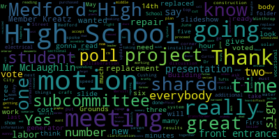
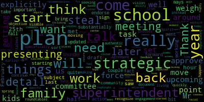
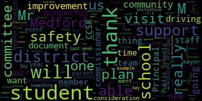

AI-generated transcript of Regular School Committee Meeting
English | español | português | 中国人 | kreyol ayisyen | tiếng việt | ខ្មែរ | русский | عربي | 한국인
Back to all transcripts
[SPEAKER_08]: You just press that, yes.
[SPEAKER_09]: Member Graham. Here. Member Kreatz.
[Kreatz]: Here.
[SPEAKER_09]: Member McLaughlin here. Member Mustone. Member Ruseau. Here. Member Vanden Heuvel.
[Lungo-Koehn]: Mayor Lungo-Koehn. Present. Seven present, zero absent. If we all may rise to salute the flag.
[SPEAKER_18]: I pledge allegiance to the flag of the United States of America and to the Republic for which it stands, one nation under God, and it is both with liberty and justice for all.
[Lungo-Koehn]: Negotiations and legal matters, executive session. Executive session of the Medford School Committee pursuant to General Laws 30A, Section 21A. The Medford School Committee will convene in executive session to discuss strategy and preparation for pending litigation on the basis that an open meeting may have a detrimental effect on the litigation position of the Medford School Committee.
[SPEAKER_09]: Motion to move to executive committee.
[Lungo-Koehn]: Specifically, the Medford School Committee will be discussing pending litigation before the Massachusetts Commission Against Discrimination, MCAD. The Medford School Committee will reconvene in public session following the executive session at approximately 6.30 p.m. Member McLaughlin has motion to go into executive sessions, seconded by Member Van der Kloot. Roll call, please.
[SPEAKER_09]: Member Graham.
[Lungo-Koehn]: Yes.
[SPEAKER_09]: Member Kreatz.
[Lungo-Koehn]: Yes.
[SPEAKER_09]: Member McLaughlin, yes. Member Mustone? Yes. Member Ruseau? Yes. Member Van der Kloot? Yes. Mayor Lungo-Koehn?
[Lungo-Koehn]: Yes. Seven in the affirmative, zero in the negative. We are going to move to executive session in room 207. accordingly. We have approval of the minutes from the May 10th, 2021 school committee meeting, which were tabled from May 24th. Motion to table by member Rousseau, seconded by? Second. Member McLaughlin.
[SPEAKER_08]: All those in favor?
[Ruseau]: Aye.
[SPEAKER_08]: All those opposed? Member Ruseau.
[Ruseau]: This hybrid thing, should we always have these on
[Lungo-Koehn]: Only four, we'll turn it in time. So if you want to speak, I'll look for the red lights and I'll try to keep order.
[Ruseau]: Okay, thank you.
[Lungo-Koehn]: Approval of the minutes, May 24th, 2021 school committee meeting.
[SPEAKER_09]: Motion to approve.
[Lungo-Koehn]: Motion to approve by member McLaughlin, seconded by member Graham. All those in favor. All those opposed. Minutes are approved. Number four, approval of bills, transfer of funds, and approval of payrolls.
[SPEAKER_09]: Motion to approve.
[Lungo-Koehn]: Motion for approval. Second. Member McLaughlin, seconded by Member Kreatz. All those in favor?
[SPEAKER_09]: Aye.
[Lungo-Koehn]: All those opposed? Paper passes. Number five, is there a report of secretary?
[SPEAKER_18]: No, there is not a report of secretary.
[Lungo-Koehn]: No report. Number six, report of committees. From May 25th, 2021, communications, strategic planning, and stakeholder engagement subcommittee meeting chaired by member Graham. Member Graham.
[Graham]: Thank you. We met on the 25th for about an hour and a half. And the subject of the meeting was really to go through the draft of the strategic plan, which we all saw last February. And it has been substantially updated since then. So we went through it in quite a bit of detail and I don't want to steal the superintendent's thunder since she will be presenting in more detail later on in this meeting, but a couple of things that we did talk about explicitly was really around this being a starting point and important for us to as a committee endorse and sign off on so that we can start to move forward and take action. We did also talk about the fact that come the fall, we'll be working on ways to bring the community to the plan. So we need to sort of start moving, but we also need to recognize that this is just the start of a plan. It's a living document and a sizable objective for this upcoming school year would be around seeking family, true family and authentic family engagement in the strategic plan. and specifically in the mission and vision, which we did talk about in our roundtables earlier this spring. But in the spirit of doing those things well instead of quickly, we were in agreement that those things should happen in the upcoming school year. We also talked about making sure that as we continue through this process that some of the task forces that we've set up, including the racial equity task force, weigh in and provide some specific and explicit feedback about some of the items in the strategic plan and really highlight for us if there are places where they feel like the plan as it is stated, or as we set out, should be adjusted based on their work. And the superintendent shared some comments about that committee in terms of their work getting started, but being significantly impacted by the pandemic, the ability to meet, the really unusual nature of the school year. And so there's more to come, I think, from them as well. but we did explicitly ask that they weigh in as it relates to the strategic plan and how their recommendations will fit in. So, and I don't wanna steal the superintendent center because she'll be presenting later today, but I hope at that time you all will think as highly of the plan as we did in subcommittee and move to approve it. So I think we just need to approve the minutes at the moment.
[SPEAKER_09]: Member McLaughlin.
[Graham]: Thank you.
[SPEAKER_09]: I just wanted to add that we also, thank you member, through the chair to member Graham, that we also talked about other subgroups like CPAC and folks like that, ensuring their involvement as well, obviously with authentic family and community engagement. And with that, I would make a motion to approve.
[Lungo-Koehn]: Motion for approval by member McLaughlin, seconded by member Kreatz. All those in favor?
[SPEAKER_09]: Aye.
[Lungo-Koehn]: All those opposed? Motion's approved. 5-26-2021 Buildings and Grounds Subcommittee meeting offered by member and chaired by member Kathy Kreatz.
[Kreatz]: Yes. Hi everybody. We had a Building and Grounds Subcommittee on May 26. All the documents I shared with everybody with the Building and Grounds Subcommittee folder. I'm gonna just summarize the meeting minutes very briefly. And then at the end, I'm gonna read all the motions at once. So we can take one roll call, there were five motions at the meeting, and I'm going to include the minutes of the meeting when I do the motion so that I don't forget because I forgot the last time, unless anybody wants to sever one of the motions. So here's the summary. First we heard from Mr. Chad Fallon. Mr. Cormier, electrical teacher, they shared an incredible slide deck to show the projects going on with the cement project at the main entrance of the vocational school, the new graphic art space, the electrical project, an additional interior house built, and the bistro storage unit. Each of the projects was done by students with the CTE shop collaboration, construction, and craft labor. There are so many great things happening in the vocational programs. We revisited discussion about the signage for the front entrance of Medford High School. It's difficult to know where the front entrance is. We need an official sign. We did two polls at the meeting and we narrowed it down to a total of the top three signs, number six, seven, and two that were in the presentation for the poll slideshow. And we voted to ask Dr. Cushing to do a poll with the student body and share the results at the June 14th subcommittee meeting. Mr. McLaughlin and Ms. Agitudin, Tree Warden City of Medford, spoke about all the great projects going on with the Medford High School front entrance at the corner of Winthrop Street. The construction and craft labor students put down new mulch and low maintenance plants to beautify the front entrance corner of Winthrop Street. A broken fence section was replaced. Several dead trees were removed. A total of 18 trees were planted between last fall and Arbor Day. We received an update from Mister Murphy regarding the high school bathroom project, the RFPs will go out over the next couple of weeks. The work will start over the summer before the students return in September. Two solar speed signs were installed at Medford High School. Also, a solar speed sign was installed at the Andrews. I drove by it before the graduation. They're all set for 10 miles per hour. Mr. McLaughlin and Alicia Hunt, Director of Energy Environment, City of Medford, spoke about the hot water system at Medford High School that must be replaced. We need this working for mid-August. Mr. McLaughlin also discussed the Curtis Tufts High School boiler. He also purchased sectional replacements. We voted to go ahead with the labor cost to repair. The Medford High School generator is not operational. It must be replaced. We took a vote to replace the Medford High School generator. We also voted for Mr. McLaughlin to repair the Medford High School transformer. Mr. McLaughlin shared an informational update on the capital costs associated with the Mervitt High School pool replacement. This was just an informational report that he shared and information's in the building grounds folder shared with everybody. So now I'm gonna read the motions. I'm just gonna read through them all, and then we'll just do one vote. Motion one, motion for Dr. Cushing to do a poll with the student body, the top three sign ideas from Mervitt High School, front entrance, number six, number seven, number two. The results from the subcommittee and the student body poll will be shared at our upcoming meeting on June 14th. Motion number two, to proceed with the replacement of the Merritt High School hot water system. Motion three, motion to proceed with the labor expense cost to repair the Curtis Tufts High School boiler sectional replacements already purchased. Motion four, motion to replace the Merritt High School generator. Motion five, motion to give John McLaughlin the okay to repair the transformer. Motion six, motion to accept the subcommittee meeting minutes. Great, thank you, member Kreatz.
[Lungo-Koehn]: Motion for approval of those five requests.
[SPEAKER_09]: Motion to approve.
[Lungo-Koehn]: Member McLaughlin, seconded by? Second.
[SPEAKER_08]: Member Kreatz, all those in favor? Aye. All those opposed?
[Lungo-Koehn]: Motion is approved. Next, we have 6-1-2021 Committee of the Whole meeting budget hearing offered by myself. Is there a motion for approval of those minutes? Will we approve the fiscal year 22 budget? Motion to approve by Member Kreatz, seconded by Member Mustone. All those in favor?
[SPEAKER_08]: Aye. All those opposed?
[Lungo-Koehn]: Minutes are approved. Community participation. Any citizen in the audience may be given permission to speak once at a school committee meeting regarding any item on the agenda for up to three minutes on any one item. A community participation portion of the agenda will be established, which will give any citizen the privilege of placing any item before the school committee to be heard on any item. Any item to be presented must be submitted in writing to the superintendent of schools by the Wednesday noon prior to the scheduled meeting with a maximum of five minutes allowed for any one presentation. Public participation emails, questions, or comments can be submitted during the meeting by emailing medfordsc at medford.k12.ma.us. Those submitting must include the following information, your first and last name, your Medford Street address, your question or comment. Do you have any emails? Yes. OK. Member van de Groot.
[Van der Kloot]: It's red, is that correct? If it's red, then yep, you're on. Okay, so I received three emails regarding the start time of our school committee meetings. They were from Eunice Brown of 48 Greenleaf Ave., Rick Orlando from 13 Winford Way, and Ron and Janice Martinetti of 126 Lincoln Road. Each of the writers asked us to start to resume the original 7 p.m. start date. Mayor, is it allowable for me to just condense these or do I need to read I think if they all are the same subject matter, you can give us a general outline. So the request on all of them is to resume the original 7 PM start date for all our school committee meetings. And part of this is that now that we're back to chambers for people who want to come up in person, it's easier for people to attend. Eunice Brown also asked that any subcommittee meetings also start at this time when a regular meeting does not occur. So if one was before a meeting, I think that it sounds like she understands that would be at a different time. Anyway, the people spoke to the fact that they want to be able to participate and that the earlier start times makes it difficult for them to do so. So that is a summation of those three letters.
[Lungo-Koehn]: I know we were doing six, so we changed tonight to 630. So it's dependent on what the committee approves.
[Van der Kloot]: Can I speak to this for a moment?
[Lungo-Koehn]: You can put a resolution on to talk about it on Monday.
[Van der Kloot]: I just wanted to explain for people why we also are trying to be deferential to the people who, for employees as well, many of them who start very early in the morning. But I didn't speak to it. Thank you.
[Lungo-Koehn]: Next, we have number eight, report of our superintendent. Number one, superintendent's updates and comments.
[Van der Kloot]: Excuse me, I'm so sorry. No problem. No, actually, okay, she said that she did get an answer from administration, sorry. Dr. Edwards-Vinson.
[Edouard-Vincent]: Good evening. So glad that we are able to meet this evening in person. And I have to say that it was really wonderful to see the class of 2021, that they were also able to participate in their graduation ceremony and prom last week. Memories made during these events will stay with our students forever. I must thank our incredible team for making this happen. The High School Administration, Principal DeLeva, Principal Fallon, Assistant Principal Blauch, who oversaw all of the senior activities, Assistant Principal Fitzpatrick, and Assistant Principal Walker. Class Advisors, Ms. Giordano, Ms. Jones, Nurse Director Toni Wray, Ms. Lisa Bowler, Michael McLaughlin, Patrick Gordon, our Medford Vocational Technical High School student, media student, Shane Colbert, John McLaughlin, our custodians, our partners on the city side, the mayor, Maryann O'Connor from the Board of Health, Mr. Brian Cairns and the DPW staff, Kevin Bailey from Recreation, Fire Chief Gilberti, Police Chief Jack Buckley and Electrical Superintendent Steve Randazzo. It was truly a joint effort with the fire department helping with the flag and just seeing all departments working together collaboratively to make the high school graduation ceremony at Hormel a success last week. Additionally, I want to thank Armstrong Ambulance and Wegmans for their continued support of the Medford Public Schools. A special thank you to all of you. The prom also was a wonderful event. I got to bump into member Van der Kloot who did contribute and just setting up and seeing how parents came, the parent group really working collaboratively, staff setting up the gymnasium and giving the students a prom experience this year. It really, really did fill our buckets. And I just want to thank again, all of our Mustangs who came out and their families, we appreciate all of your hard work. on behalf of our students. Some good news. Last Thursday, our Commissioner of Education, Mr. Jeff Riley, came to the Roberts School for a visit. The Commissioner had planned to visit us about three months ago. As he knew, Medford was way ahead of many other surrounding districts, but his schedule at that time did not permit it. During that visit, we had Mayor Lungo-Koehn, school committee member Van der Kloot, state representative Paul Donato, assistant superintendent Galusi, nurse director Toni Wray, joined by our principal, principal Johnson and assistant principal O'Brien. As the commissioner came and got to observe our students during COVID testing, Then we all went on a tour and visited Mr. Connor's phenomenal music classroom where the students were drumming. And yes, Mr. Connor invited our commissioner up to participate in drumming and he did participate. He was a trooper and participated with our students and participated in the drumming and they composed beautiful music. Um, we then moved on to visit one of our first grade classrooms and mayor Brianna, we were able to visit her son's classroom. The kids were excited. Um, and we were accompanied during that visit by NBC news 10. And, um, this particular visit that took place last week was also highlighted in the commissioner's communication that went out this week. So if you look at the commissioner's communications, you will see that he highlights the Roberts School. And again, it's just an opportunity to show the wonderful things that are happening in Medford Public Schools. Speaking of NBC 10, they were at Medford High School today to interview Mr. Dave Murphy and myself about what is Medford doing during the heat. Additionally, they were able to go and visit, see part of the sophomore junior class distracted driving presentation that took place, AAA. And I want to just thank our safety officer, Canava, Chief Buckley, who was there, Miss Stein, who was a presenter. AAA, Distracted Driving, and Dan Strawlow from In Control Crash Prevention. They actually did a demonstration by the West Courtyard of a vehicle going at high rates of speed and how long it took for the car to stop. 30 something miles, 40 something, 55 and like 60 miles. So the students were really able to see how long it took for the vehicle to stop. And some of the cones did get knocked over and thank God it was a demonstration, but letting them see that it could have been a person or an object. So again, just teaching them about being safe drivers and the importance of not being distracted. So that was a wonderful event today. Three key things that were shared during the presentation that took place in the gymnasium. The three types of distraction that take place while we are driving are manual, visual and cognitive. A manual distraction would be grabbing something, for example, with your hands or digging into your purse or a bag, looking for something while you're driving. A visual distraction would be reading texts or even watching movies or sports while you're driving, which does happen when a sports game is being streamed. A cognitive distraction is when you are impaired, and that could be by alcohol or by marijuana. So the students really got to learn about what distracted driving is and walk away, we hope, with some new knowledge to help them as they become drivers. During the training today, they also shared with the students that the most amount of accidents take place between Memorial Day and Labor Day. So this is the worst time for our young people to get in accidents over the summer. So I would just encourage you parents to please speak with your young adults about responsible and safe driving as we go into the summer. Thank you. This week at the Andrews and the McGlynn middle schools, they will be hosting in-person open houses for their incoming sixth graders and their parents. On Wednesday, June 9th, it will be at the McGlynn, and on Thursday, June 10th at the Andrews, both schools will feature the same schedule. The schedule will be as follows. Presentations by the principals and assistant principals will begin the visit and then the tours will commence. In order to accommodate everyone safely, each school will feature two groups and times. So each student can be accompanied by one parent or guardian only. All attendees must wear a mask. Student last names that begin with letters A through K will meet from 6 p.m. to 6.45. Then students with the last names that begin with L through Z will meet from 7.15 to 8 p.m. Curriculum directors will be located in the gymnasiums for general questions. It is our hope that all incoming sixth graders and their families will be able to join us. Yesterday, our own CCSR was featured in the Boston Sunday Globe's Metro section. This article described how this program prepares young people to be future leaders in tackling societal problems ranging from climate change to racism. As Mr. Trotter stated, and he will be speaking later this evening with us, CCSR helps to make our world a better place, one student at a time. It is a positive thing where young people learn early on to care about others. to be compassionate leaders. We are so very proud that this program is an integral part of the Medford schools and our community at large. Last week, Colin Bailey, a senior advanced placement Italian student, and one of our student school committee reps, was selected by Ms. Bebeau to read a passage from Dante's Inferno. The event was sponsored by the Embassy of Italy. It invited students from around the country to read a passage from Dante's literary work to commemorate the 700th anniversary of his death. Dante Alighieri had a major effect on the Italian language. By writing in a vernacular style that presented the common dialect of Florence, he reached the masses of Italy and spread the idea that there could be one Italian language for all to speak. Congratulations to Colin on this great honor. Last but not least, June is LGBTQ plus pride month. Pride Month is celebrated every June as a tribute to those who were involved in the Stonewall Riots. We at the Medford Public Schools welcome all, accept all, encourage all, and teach kindness for all. I was honored to join with the mayor, the GSA, CCSR, member Rousseau, member McLaughlin, and community members as the pride flag was raised at Medford City Hall. Truly Medford pride. As President Biden stated last week, during LGBTQ plus pride month, We recognize the resilience and determination of the many individuals who are fighting to live freely and authentically. In doing so, they are opening hearts and minds and laying the foundation for a more just and equitable America. This Pride Month, we affirm our obligation to uphold the dignity of all people and dedicate ourselves to protecting the most vulnerable among us. Thank you.
[Lungo-Koehn]: Thank you, Dr. Edward-Vinson. Number two, the COVID-19, I'm not sure public health update, Medford Public School COVID-19 testing summary and update director of health services, Ms. Toni Ray and assistant superintendent, Mr. David Murphy.
[Wray]: Good evening. I'm going to try to do this from my home. So I thank you for your patience with the Zoom link. I hope everyone can hear me.
[Edouard-Vincent]: Yes.
[Wray]: The city of Medford remains in the green zone. There were 20 positive cases in the last two weeks, giving the city a 0.51 positivity rate. Last week, the Medford Public Schools COVID-19 testing program identified zero positive COVID-19 cases across the district while conducting 2,580 COVID tests. We are very proud of everyone's efforts to continue the mitigation strategies. As more of our students are obtaining their COVID-19 vaccines, I remind families to please submit the vaccination records to the school nurse so they can be kept on file with our health services department. COVID-19 surveillance testing will finish on Thursday, June 10th for all schools across the district. The only exception is we will test all athletes on Monday, June 14th, between 1230 PM and 230 PM at the high school. Testing continues to be mandatory in order for athletes to be eligible for participation in the post-season tournament games. And lastly, I have an urgent message about the COVID-19 vaccination clinic that is scheduled for tomorrow, Tuesday, June 8th, from 3 p.m. to 6 p.m. for students who received their first COVID vaccine on May 18th. The location of the clinic has been changed to the McGlynn Middle School. Emails containing a link for registration were sent out on Friday, June 4th, and again this afternoon to all parents of students who received their first dose. We strongly encourage you to register so that you have a scheduled appointment. Thank you.
[Lungo-Koehn]: Thank you, Ms. Frey. Number three, recommendation to approve an anonymous donation of $2,500 to support the Haitian Flag Day celebration at Mefford High School in May, 2021. Dr. Maurice Edwardson.
[SPEAKER_18]: Thank you.
[Edouard-Vincent]: So I am pleased to announce that the donation is no longer anonymous. And I would like to formally thank Mr. Leonard and Ms. Lois Green of the Leonard and Lois Green Foundation for their generous donation of $2,500 to the Medford Public Schools to cover the additional costs that occurred during the Haitian Flag Day celebration during the month of May on Tuesday, May 18th. This day, on that particular day, activities included a traditional Haitian luncheon, as well as dance classes and performances by the Jean Apollon Expressions Dance Company. So I respectfully recommend that this gift be accepted by the Medford School Committee by a formal vote. Motion to approve.
[Lungo-Koehn]: Second. Motion to approve by Member McLaughlin, seconded by Member Ruseau. All those in favor?
[SPEAKER_08]: Aye.
[Lungo-Koehn]: All those opposed? Yes, a letter thanking the family. Yep, that'd be great. Motion is approved. Number four, we have report on $350,000 grant award for the Center for Citizenship and Social Responsibility, known as CCSR, from the Cummings Foundation. Dr. Maurice-Edouard-Vincent and Mr. Richard Trotter, and I know we have Mr. Michael Skoker in the audience as well.
[Edouard-Vincent]: Thank you. So we are truly extremely grateful to the generous, generous award from the Cummings Foundation. The Cummings Foundation did award us $350,000, which we will be able to use over the next 10 years. I wanna thank Mr. Skorka and Mr. Trotter for coming to join us.
[Lungo-Koehn]: You just press the button with the little person's face and there you go, there you go. Thank you.
[Trotter]: Hi, Richard Trotter, former media director. Knowing how to push all the buttons was one of my forte's in the past. So I want to say on behalf of the students and teachers and advisors that they're the ones that really got this grant. I was the voice, I wrote the grant. took their work and used it, and I sold it to Cummings. They love our program. We've been working with them now. This is our fourth, fifth, sixth, seventh, eighth, ninth, tenth, fourteenth, thirteenth year total. We had a three-year grant a few years ago. So now there's $300,000. We now have $450,000 that have been donated by the Cummings Foundation to the kids and people of Medford. So that's something we really want to recognize. And for all of us, I want to thank them for that. I also want to thank the superintendent central office for, they've been amazingly supportive of the program, allowing us a lot of support and flexibility and financial support as well. So a lot goes to the superintendent and the administration of Medford and the school committee for obviously allowing that to happen. I don't want to say much more except that this has been an incredible journey and this, This baby that has grown into now an adult has been quite an experience for us. And it could not have been done, really, in the long term, the last short term, without the man standing next to me, Michael Skorka, because this program started off really slowly for a couple of years, and I met Michael, and the whole world changed. And so, like I said, this program wouldn't be here now without him, and I just wanted to say hi, and do you have a couple of announcements? That'd be great, thanks.
[Skorka]: So we always take the opportunity to talk about upcoming events. So I wanted to mention two of them. On Saturday, we have two events happening at the same time. The first is in collaboration with the library and the GSA. We're doing a march for gay pride. because Gay Pride was canceled in Boston. So we're giving the teens an opportunity to walk in Medford. We've been coordinating with the police department and coming up with a run and the mayor has been super supportive as well. So that's happening on Saturday. Students are showing up at 9.15 and then it's gonna be about an hour and a half walk. So we should be getting back to the school anywhere between 11.30 to 12 o'clock at the exact similar time, not exact time, similar time. We have a food drive going to three students. They want a $1,000 grant from Tufts to buy groceries to give out to combat food insecurity. And this is happening at the high school as well on Saturday. We have 50 bags of groceries to be to hand out first come first serve. No questions asked. It's also going to be at Medford High School from I believe we're gonna be packing at 9.15 and it's gonna be officially the event from 11 to one on Saturday. So two events happening on the same day, one more event on Tuesday of next week. We are going to be announcing the unraveling and we are doing a ribbon cutting for our first micro pantry at Medford High School. Again, combating food insecurity. We'd love for all of you to be there. We're gonna have, it's gonna be taking place at 1230 because it's a half a day on that week. All of the days are half a day. So it's going to be taking place on Tuesday. I believe that's the 15th at 1230 and should last approximately a half an hour. We're going to be putting two micro pantries into the ground. That's the first one. And then the second one is going to be put at the Medford Vocational Technical High School in the fall of next year, which we'll do a separate ribbon cutting for. Of course, you'll all be invited to that as well. So we're really appreciative. Thank you so much. We're very grateful.
[Edouard-Vincent]: Thank you. I just wanted to share the timeline because people may not know that since 2012, over $665,000 has been raised to support CCSR. In 2012, the first $50,000 donation was made by the Bloomberg Philanthropies. In 2016, the Cummings Foundation awarded CCSR with the first $100,000 grant to be spent over three years. Then in 2018, CCSR was awarded the $125,000 award from the Crystal Campbell Community Betterment Project with the Boston Foundation. In 2020, they were awarded an additional $40,000 donated by the Crystal Campbell Community Betterment Project, Boston Foundation. And then in 2021, they were just awarded a whopping $350,000. So from the Cummings Foundation. Thank you. Thank you.
[SPEAKER_09]: Mayor? Actually, can we wait? Member McLaughlin.
[Graham]: You guys come back. Mr. Skorka and Mr. Trotter, can you come back so we can?
[SPEAKER_09]: Member McLaughlin, then Member Van der Kloot. Thank you. I just wanted to say thank you. And what a tremendous star you are in Medford's sky for creating compassionate leaders. And I'm so excited to see what's going to be next with this $350,000 grant and what your goals are. And would love to hear more about those as well. And also wanted to thank you for including the history of disability rights as civil rights in your presentation this year on diversity. And we had lots of students reach out to us and let us know that they did not know that history. So it was really wonderful that you had that included as well. And I'm just, I think you're an example to every district in our state and really appreciate all that you guys do. Thank you.
[Van der Kloot]: Mayor?
[Unidentified]: Yes.
[Van der Kloot]: Member Van der Kloot. I too would like to just add my thanks and appreciation for all you do. It's so exciting each year to get to see what projects the kids are going to take on and it's just so fabulous for our district and just a sense that we're on the cutting edge with this and really appreciate it. I would like to ask the superintendent if you would make sure that a letter goes out from the school committee thanking the Cummings Foundation for their extremely generous gift to the CCSR. Thank you guys.
[Kreatz]: Yes, yes, I just want to also say thank you and it's just such a pleasure, you know, just seeing all the Facebook posts that we get shared on the blog and just reading the article in the paper on Sunday and my neighbors like look at this. I'm like I know I know it's just a great things going on my proposed schools. I know there's just so many great projects. It's just unbelievable every day. I'm just reading anyone. Thank you so much both of you.
[Lungo-Koehn]: Thank you and everybody all the students and from the chair. I think it's the most amazing. I almost lost my words, organization. I mean, it's one of the best we have here in Medford. Hundreds and hundreds of kids have used the program to do great things. And I love getting the emails multiple times a week of all the projects they want to do and help they need. And we're always happy to help school committee in my office. Thank you. Thank you for all you do.
[Galusi]: Number five, we have report on the Universal Safety Committee, Ms. Joan Bowen and Ms. Tanya Sullivan. They will actually turn the mic on for you, Mr. Gordon. So you don't have to touch it. Don't touch it? Yeah, so you don't have to. Oh, okay. Thank you very much. Good evening, Madam Mayor, Dr. Edward Benson and school committee members. Tonight, I'm joined at the podium by Tanya Sullivan, who is our co-chair of CPAC, and tonight we're here to do a presentation regarding our Universal Safety Committee and the work that we've done during the school year of 2019, 2020, and this past school year. The members of the Universal Safety Committee include myself, Jan Hollenbeck, who's our coordinator of related services, Miss Susanna Campbell, who's our coordinator of speech-language hearing services. Mr. Paul DeLeva, who's the principal of Medford High School. Miss Stacey Shulman, who's our supervisor of clinical and behavior services. Member Melanie McLaughlin, who is our school committee member. Craig Droschke, who's the principal at the Curtis Tufts High School. Tanya Sullivan, who's our co-chair of Medford CPAC, as well as the Medford Public School principals who join us on a quarterly basis. Our story and how we began, the Universal Safety Committee was formed in response to a 2018 scare in Medford schools that raised many questions around the equity of safety for students with disabilities in an emergency situation. As the Universal Safety Committee progressed to what it's become today, safety for all students, faculty, and administration are considered in the representation, planning, and goals of all of our initiatives. Our Universal Safety Committee mission statement, the Universal Safety Committee's commitment is to promote and maintain equity in safety within our schools and our community, and to advise the Medford School District on emergency planning, providing professional development opportunities and implementing best practices in emergencies of any kind, while delivering transparency and communication with families and guardians of students with special needs and all students. The Universal Safety Committee meets monthly, realizing and putting into practice ways for school staff to provide necessary accommodations organically to continue to create adaptive change in culture, demonstrating that all students are Medford students. Some of our accomplishments for the past two school years are the first one we did was our classroom go bags. These were created for all of our subseparate classrooms and they include items that individual students may need in case of an emergency. There may be a fidget toy, a stress ball, noise reducing headphones, a notepad to draw pictures while they're out on a fire drill, or if there's an evacuation. We also had our second I believe it's our second annual safety preparedness presentation. And with that, we received 96 emergency go bags that we were able to distribute to the community and members of our school department and also our special education students. We also developed our USC resource webpage, which will be accessible to all our families and community members. It has different resources that members can use and look at when items come up or questions come up about different situations that happen within the community. And then our last accomplishment is our individual emergency response plans. And these are for our students with disabilities. There's a discussion at their specific team meeting and we talk about what sort of specific needs that they may have. And we create a document that goes along with their individual education program. And what we have next is a few pictures of the assembly of our classroom emergency go bags. Our project transition students took this on as a project. We had many donations and we also had funding from CPAC and other sources. It includes hand sanitizers, like I said, fidget toys, things like that. And the students in our project transition classroom put these together and distributed them across the district to our different classrooms. This is us organizing and distributing the home emergency go bags that we received through our emergency preparedness from Homeland Security. So, Tanya, Jan Hollaback, Susanna Campbell and I, we organized them according to drop-off, pickup, and we all were able to get those bags to community members who had requested them. And this is just another picture of the distribution. This is the many bags that we had in our speech and language center. And our goals for school year 2021 to 2022 for advocacy and awareness campaign to increase awareness and the use of smart 911, which is a program that Medford has in place already. If you have, someone in your home that has a disability or has an illness, you can note this with the SMART 911 program. And if there's an emergency and the fire department or the police department show up at your home, they will know that they are going to find a person or may find a person there that has the disability that's listed in the SMART 911 program. We're also for advocacy and awareness, the file of life when fire personnel or police officers show up at a home, they typically will look on a refrigerator for what's called a file of life. It's a magnet that lists allergies, illnesses, disabilities, and things of that nature. And they are trained to look there first. So it's something we really want to get out into the community. For training and resources, we would like to host our third annual emergency preparedness event. Emergency Preparedness Event 3.0. It should be amazing. And hopefully it will be in person this year. This year we did it virtually and we had a great turnout and we think it will be even better next year. To create and distribute pamphlet on available resources, including self-advocacy, civil rights, and ADA. And then monitoring of the projects that we currently have in place. So ensuring the continuation of these projects by refilling the classroom go bags, and ensuring the implementation of the IERs. And are there any questions? That's our presentation. Great job, ladies. Thank you. Member McLaughlin? Do you want to go first? I just wanted to say thank you, guys, for presenting. It's been such a pleasure working with you all the past two years. Our emergency preparedness events have been really remarkable and I want to make sure that the community knows that, you know, the work we're doing certainly originated with persons with disabilities as we thought about well how did they get out of the building in a fire or what happens in a school shooting or any of these instances and we sort of really had to start to think through those things but I also want to assure the community that this is for every individual. And that's what you learn in the emergency preparedness meeting. Suddenly you start to realize that we haven't thought through these things as families and as individuals, like where do we go in a crisis? What do we do if there's suddenly a national emergency and we have to evacuate? Where are we going? And this is sort of what the emergency preparedness program has taught. And so the Mass Office on Disability has partnered with us on this program and they have been really tremendous. you all and the IERs as well. I just wanted to say the individual emergency response has been a model for DESE. So it's sort of, it was a takeoff on the IEP, but individual emergency response also obviously are for people with and without disabilities. Some people might break a foot, need additional assistance, what have you. So these can be made available to all individuals. So this has been a really remarkable program in our districts. And I wanna ensure open invitations to the community invitations to our school committee members or community members. The meetings occur the last Friday of the month at 8am prompt. In the future, we'll be in the superintendent's conference room. So the equity and safety, I want to thank you all for that. You have really brought that to our district as well and the importance of that and really took you know, a concerning situation and made the best of it and continue to make the best of it. And those emergency go bags for people who don't know what's in there, there's everything from chargeable flashlights to crank radios to, you know, just an amazing toolkit. So thank you guys so much.
[Van der Kloot]: Thank you.
[Edouard-Vincent]: I just wanted to say thank you as well. It's wonderful having a fabulous partnership with our CPAC, with the Universal Safety Committee, and just knowing that when we need feedback or advice, Tanya, thank you always for your willingness to support the district. And this is a wonderful example of how partnerships can really work to enhance and strengthen the district. And I'm just thankful. So thank you very much.
[Galusi]: Thank you. It's our pleasure. Thank you. Thank you. On number six, we have CPAC report presented by Ms. Alex Lark and Ms. Tanya Sullivan, co-chairs of the special education Parent Advisory Council. I feel like it's been years. So we are here to present for the Medford Special Education Parent Advisory Council, Madam Mayor, Superintendent, and school committee members. The board members are Alex Lorak and myself. We are the co-chairs of BCPAC. Our treasurer is Jamil Webb Davis, and our secretary is Anne Herzog Russo. Membership includes students, families, and guardians of children on IEPs, 504s, and any other interested parties. The Medford CPAC is always looking for parents or guardians of children with special needs and other interested parties, including students, to be a part of our community. If you would like to learn more about how to get involved with the Medford CPAC, please email medford.cpac at gmail.com. We would love to have you. Our mission. So what is CPAC? Some people watching may not know what CPAC is. Our purpose is to fulfill the directive stated in Chapter 71B of the Massachusetts General Laws, which requires a school district to establish a PAC, Parent Advisory Council, and assigns both an advisory and a participatory function to the PAC. In meeting this requirement, the mission of the Medford Special Education Parent Advisory Council is to advise the district on matters that pertain to the education and safety of students with disabilities by seeking input from the special education parent members. We meet regularly with school officials. We participate in the planning, development, and evaluation of the school district's special education program. and we participate in planning workshops and activities as prioritized by the CPAC board. We have some highlights to let you know about. There's a couple pages of them, so sorry if we're going on and on, but we were very busy this year. This has been a crazy year for everybody. The CPAC co-chairs, Alex and myself, were involved in the Medford reopening strategy. I was part of the district-wide reopening task force, and Alex was part of the McGlynn reopening team. CPAC hosted four Q&A sessions with Joan Bowen to address questions, concerns, and challenges our families experienced regarding school reopening. The feedback on that, I will say, was tremendous. Parents so appreciated that, and they so appreciated Joan taking the time to actually participate in the Q&As and offer explanations and valuable information. The four sessions were held during August, September, and October of 2020. CPAC participated in the tiered focused monitoring process and received a commendable rating, recognizing the collaboration among district leadership, the CPAC and the school committee. There's still much work to do moving forward and we look forward to our next steps. CPAC has continued advocacy for the adoption of a disability awareness curriculum in Medford public schools and is presented to the curriculum subcommittee. We continue to collaborate with the special education department and with the curriculum subcommittee to advance issues important for our community. Both Alex and I were panelists for the disability awareness professional development program offered to teachers and administration. And Alex was part of Medford team and the Desi sponsored family school partnership initiative. CPAC offered several content rich presentations throughout the school year, new for the school year of 2020 and 2021, CPAC presentations qualified as PDP credits for teachers and staff who attended the presentations. And the topics included basic rights to evaluation and eligibility, transition planning and services for students 14 and over, understanding dyslexia with a focus on Orton-Gillingham reading instruction, out-of-district community connections, differentiated curriculum accommodations and modifications, and vocational presentation on opportunities for students on IEPs. CPAC goals, we're focused on moving the disability awareness curriculum forward for students in all schools. Through this disability awareness curriculum, students will develop understanding and respect for fellow students with physical, intellectual, sensory, and developmental disabilities. The curriculum will provide age appropriate information that highlights the unique perspectives and strength people of all abilities bring to our community. This will begin with a pilot program being implemented in the fall. We will also continue to serve on the special education and behavioral health subcommittee where for the special education part of this committee, forming authentic peer friendships in school and in community and for the behavioral health side of it, the trauma informed schools to really have our schools be on point when it comes to being trauma informed. So we have a lot of great people in the district that are helping us work on that as well. And we actually have a few awards we wanted to give out every year. CPAC presents an award or awards to members in the district who for the current school year have embodied what it means to go above and beyond for our students and families. So as we read the names, we request that each person come up and then remain up here until they're all done so we can get a photo up. Mel, do you mind taking the picture? Okay. Okay, our first person, I'll read what I have here. So our first award is going to go to Carla Andre. Carla is a fifth-year teacher. Yes, absolutely. Carla is a fifth year teacher in the access program at Medford High School. The access program, for those that don't know, is a life skills based program. It's focused on functional academics, independent living skills, and community interactions. Carla has always been a think outside the box educator, and this past year was no exception. Carla took the pandemic as a personal challenge and raised the bar on new ways of teaching her students and providing virtual community experiences. She was integral in transitioning students to virtual and back to in-person, making it look seamless. Thank you, Carla. Our second award goes to Denise Desjardins. She is the district-wide physical therapist. She is not happy that she has to come up here, but that's okay. Denise provides PT services, physical therapy services in three of our elementary schools, both middle schools and Medford Vocational. If a student requires PT services through their IEP, chances are Denise has worked with them, advocated and provided support for them and their families. During the pandemic, Denise worked tirelessly with families and students to transition from school to remote learning, from elementary to middle school and from remote learning back to in-person and I'm sure I have forgotten something because she does so much in this district. Thank you, Denise. Our third and final award we'd like to give to Joan Bowen. Having worked in the district for many years, Joan became the Director of Special Education and Pupil Services in 2019, right before all this craziness happened. Just in time for the COVID pandemic, we are offering this award for outstanding collaboration with CPAC, transparency of the special education process during the pandemic, and her advocacy for the speedy in-person return to school for children with high needs. We are also offering this award to Mrs. Bowen on behalf of all special education teachers and service providers in Medford. who were the first to return to school in person, while also making remote learning work for students with special needs. They were truly frontline workers during this pandemic. Thank you. Mayor. Do you want to take a picture?
[Unidentified]: Yeah.
[Galusi]: Can we get a picture with the school committee, actually? Can you guys come right in here? And then may I, Mayor, just for a moment? Yes, Member Rubio. Also, I just wanted to say thank you to our co-chairs for our CPAC and your tireless efforts in advocating for students with and without disabilities and the folks that are here. I also want to say Denise Desjardins was distributing lunch to students all summer long. And Ms. Andre was doing a presentation on differentiated curriculum to make sure that we're presuming competence for every student in our schools. So they're just really wonderful examples of folks here. So a community shot would be great with us.
[Van der Kloot]: And Mayor, I just also want to congratulate and thank our dynamic duo team, Tanya and Alex for their incredible energy. I really, when I get to attend the meetings, you're great. Thank you so much for all the work you do. Thank you.
[Unidentified]: Thank you very much.
[Galusi]: Some great things, okay. Number seven, recommendation to approve Medford Public Schools strategic plan updates. Dr. Marice Edouard-Vincent, Dr. Peter Cushing, and Ms. Suzanne Galusi.
[Edouard-Vincent]: And I'm also going to call forward Ms. Susanna Campbell as well. So this This evening, we're going to be presenting the revised strategic plan to the entire school community. This is what the cover page would look like if you were looking at it online. And what we're going to present today is an abbreviated version of what was presented at our communications, strategic planning and engagement subcommittee meeting with member Graham as the chair. That was a lengthy presentation. We're going to try to shrink that presentation down, but at the same time, try to give you an idea of what the revised strategic plan, our strategy for district improvement looks like. I do want to say, as I talk about the documentation that went into getting this, I would be remiss if I didn't mention there's a smaller group of us, and we worked collaboratively with all of our administrators, but then there was more of a tactical team that really took the feedback that was coming in and worked very closely on this. And so I want to recognize Principal Nick Tucci, Ms. Susanna Campbell, Lisa Vangelista, Dr. Riccadeli, Ms. Suzanne Galusi, Dr. Cushing, Ms. Stacey Shulman, and Principal DeLeva, who were a part of the tactical team helping us pull this district strategy for improvement together. The documents that went into creating this Not only did we take into consideration data from DESE, city and district surveys, district administration feedback, the mayor's education transition subcommittee meeting that took place at the McGlynn school, and also the Medford mayoral transition committee recommendations that were taken into consideration for this, our district strategy for improvement. The genesis of our district strategic plan, this was an official requirement from the new superintendent induction program, which is a program sponsored by DESE, the department of education for all new superintendents. And this was one of the key documents that they want all districts to be able to have housed in one area what is our district strategy for improvement. So this document is the reinvention of what used to be known as the Medford Public Schools District Improvement Plans. We had leadership retreats and many meetings with administration to inform what went into this plan. It was a cross disciplinary team of administrators who represented elementary, middle, and high school levels, special education, social emotional learning, curriculum, and central office. And we also took into consideration pandemic concerns, and greater racial awareness that allowed the district team to re-examine our priorities. So as I had shown, this is what the document looks like. If you were looking at it, there are four key categories that we've identified as achievement, collaboration, equity, and support. Achievement represents student growth and achievement. Collaboration is collaborative relationships. Equity is equitable learning opportunities. And the S of safety and support, supportive learning, safe and supportive learning environments. I am now going to transition to Dr. Cushing, who's going to explain to us the action plan and talk about the draft example. Dr. Cushing? Just tap the face, thank you.
[Cushing]: Good evening, ma'am.
[Unidentified]: Dr. Cushing? Mr. Patrick?
[Cushing]: Good evening, Madam Mayor, members of the school committee. Thank you for the opportunity to be part of the team presenting tonight. So in the previous slide, you had seen the present one page presentation. Each one of those hyperlinks clicks to a full page document that looks similar to this. This would be the top section. It lists the section that is in. So this is pulled from collaborative relationships initiative three. It then lists the actual initiative. So in this case, engage in timely, thoughtful, two-way, culturally-professional communication with the Medford Mustang community. It talks about early indicators of success that we'll talk about later. What are some of the anticipated outcomes of this specific initiative? Who's the leadership team required for it? And then what are the resources needed, budgetary time, whatever it may be for us to actually fulfill this initiative to its full potential. Then the second part of the page are the actual action items, the outputs that will go with them, who specifically is responsible, and then a brief timeline. So for each and every initiative contained within the strategic plan, there's a sub document that carries forward the actual action items of this. And I'll now turn it over to Ms. Galussi.
[Galusi]: Thank you very much, Dr. Cushing. Thank you, Madam Mayor and members of the school committee. I'm just going to talk the next piece. We wanted to make sure that this document is accessible to the entire community so that you will know that there is a glossary of terms that will be included in the strategic plan. Just a brief example, there's several terms in this document, but just a brief example are located here so that parents can, or community members can look and see what we're referencing in certain items of this plan. You'll see that this brief example just gives an explanation for what a 504 plan is, what a BCBA is, it's an employee within the city, it will explain, Credit for Life, which is an organization that works each year with high school students. So we just want to make sure that this plan, when members of the community are reading it, is accessible to all. So you'll also find a glossary of terms. Moving forward with the rest, I'm going to start off with the achievement bucket. I just want to say Dr. Cushing and Dr. Wadvinson gave a very nice overview of the strategic plan. What you're going to notice here is just a high level, a more detailed, as Dr. Cushing mentioned, it was provided to the school committee and will eventually be posted on the website for those to see the more, the sub documents that Dr. Cushing was referring to. So in the achievement objective, there are going to be four initiatives. You'll notice that as I speak about them, these initiatives start at like a foundational level and move forward that way. So for example, the first initiative is going to talk about curriculum. and then move into an effective instruction, and then common assessments to make sure that we can monitor the curriculum that we're utilizing and ensuring that the instruction matches that, and how we can use technology efficiently to wrap that all together in a nice little package. So this first one, as I mentioned, is establish an ongoing curriculum review cycle. So the anticipated outcomes for this would be an alignment of curriculum with the Massachusetts frameworks, assessing curriculum for bias, which we do annually through the use of a rubric tool and professional development to support curriculum. Now we are in the process of a lot of alignment right now with our curriculum here in the city of Medford. As standards are being updated through the department of education, we have to align our curriculum. And as such, we're in the process of that through the humanities department, as well as the math department. The second initiative is the use of evidence-based instructional practices to implement the curriculum. So the anticipated outcomes for that are educators utilize teaching practices proven to work. Students are both challenged and supported. Students engage in academic conversations and metacognitive activities. All students have access to instruction that benefit their learning style and progression. Instructional feedback is rich, authentic, and targeted. And so these outcomes are aligned with the five core actions that Dr. Vincent has brought with her here to the Medford Public Schools. We work with this, with building leaders, as well as department heads and teachers. That focus is continuing next year, as well as training and integration. The third initiative is to implement common assessments to inform instruction and make modifications to our current curriculum. Anticipated outcomes are utilization of student data to inform instruction, data to better identify students in need of additional support interventions and enrichment, growth determination per student, and streamline and update district-wide assessment schedule. So this outcome, I think, speaks crucially to the work that we have ahead of us. A lot of this is in place. but we need to refine, align, and enhance what we currently have in place due to what COVID has done to disrupt student learning. So a big focus next year will be on developing reporting systems and progress monitoring through the enhancement of our school-based data teams. So we'll have a lot of work on that. Another piece to this is finalizing our early literacy screener. which we've been piloting for the past two years, as well as coming up with common assessments district-wide with a norm-based assessment tool. That way we have district-wide data with common goals and terminology to help us with our progress monitoring of students, ensuring they get what they need. And the final initiative is provide instructional technology that meets the curricular needs of educators and learners Those anticipated outcomes are to create a district technology plan, which I think is the biggest outcome and piece of this, which means we are going to assess our infrastructure, personnel, digital resources, and staff development needs, and then work really hard to create a plan and implement that plan. engage stakeholders to support the effective use of instructional technology and digital learning resources, assessment of current technology management and infrastructure staff and recommendations for future growth, critical elements necessary for effectively utilizing technology for teaching and learning identified and implemented. I'm now going to pass off to Dr. Cushing to speak to you about the collaborative
[Cushing]: Thank you, Ms. Galussi, appreciate the handoff. So a critical part of our district's strategic plan is the collaboration with the many various stakeholders that we have in Medford. And so we're gonna create a culture of collaboration through consistent community engagement. So our first initiative is to build and sustain community partnerships that improve school effectiveness. So why do we wanna do these? It's specifically to improve student outcomes. So how can we leverage community partnerships to improve student outcomes? We want to enhance the professional development opportunities and resources that are available to our faculty and staff. And we also want to create educational opportunities for students both during and after school. So how are we using not only students at the high school to go out and be members of the community, but how are we looking to the community to support our initiatives across the district so that we have these great enriching opportunities for the community to be a part of. So that's initiative C1. C2 is ensure that all family members are welcomed members of the school community. So our anticipated outcomes, families will feel more included and informed in district decision making and develop pride and ownership of the school system. So what we're hoping to do here is to really leverage that sense of ownership that Medford residents, Medford families, and Medford students have in their district to really advance and move the district forward back to C1 to improve student outcomes, like trying to draw it all back to how do we improve student outcomes. And moving on to initiative three, engage in timely, thoughtful two-way communication that is both culturally proficient and really engages the community in like finding ways to look at how we can have a better two-way operation. So as a result of the school inmate audit, this is a great information audit that has been done with the Medford Public Schools this year. And just in the initial findings has really opened our eyes to how we can better support the community and we're looking forward to more of that information coming in. So as a result of the school and main audit, the district will be better positioned to anticipate and support the school community. Improved communication engagement with caregivers and stakeholders, increased trust and support and just give me a second while I move the zoom window. and once again, improve student outcomes. One of the major action steps under this initiative is the development of a district marketing communications plan. All right, so a really concrete document that provides clear, well thought out direction for how the district, which is a major part of the Medford community, communicates with that community. and provides guidelines for all of our major stakeholders within the district, our principals, assistant principals, directors, as to how we can present the phenomenal things that the Medford Public Schools is doing on a daily basis. So that our community members, many of whom who are here with us today or online in Zoom can feel like, wow, that is really incredible. And, um, I want to get out there and make every day a great day to your Mustang for our students. So once again, wrapping it back to how our, uh, how we're improving student outcomes. Uh, finally, uh, working collaboratively initiative C4 working collaboratively with community stakeholders to appropriate budgetary resources. Uh, so budget documents and easy to read and non-financial terms. I think it's very easy, like we were talking about the glossary of terms earlier. It's very easy to overwhelm people with education speak and financial literacy speak that when we start talking about how governments finance and fund our school districts, but we wanna make that really boiled down and distilled so it's very easy to understand. And that's through the earlier initiatives of the marketing communications plan. Once again, the citizens of Medford were like, wow, our schools are doing amazing things. We need to continue to support them through those things. Another thing is very technical, a transition to Munis, which is a governmental software that makes everything flow and move very easily. Again, a more detailed presentation is online at the district's YouTube channel from last week when we presented to the subcommittee. At this time, I'm gonna hand it off to Mrs. Susanna Campbell to take us into equity.
[Galusi]: Good evening. Equity represents equitable learning opportunities. Specifically, the district's objective is to understand the needs of our diverse population and support the academic, social, emotional, and physical needs of our students. As you will see through the five initiatives under this objective, as a district, we believe in supporting the whole student. Our first initiative is increase the support and understanding of the health, wellness, and social-emotional needs of our students. The anticipated outcomes are that we will have a social-emotional inventory to share with the public, social-emotional resources that are available to all faculty, social-emotional learning plan, excuse me, learning action plan, professional development plan, increased ability for students to access the curriculum, increased students' social-emotional skills, data cycles and screenings will be established, and we will have increased evidence-based groups for counseling. An example of one action item from this initiative is an annual assessment of the district's current, thank you, of the district's current social-emotional learning programming. Each year, the district will identify areas of strength and need. This information will be used to develop social-emotional learning action plans at school and district levels. A monthly review of the action plans will take place to ensure that we are moving forward productively. Our second initiative is to prioritize development of systems that support a shared vision for disability awareness, anti-racism, anti-bias, and cultural proficiency across the school district. There are five anticipated outcomes of this initiative, which include emergence of an increasingly diverse staff, culturally proficient curriculum for all students, assessment of the state of our district with regard to diversity, district-wide disability awareness curriculum, and social justice curriculum for secondary education. When we think about and speak about diversity, our district vision encompasses numerous stakeholders. We are working toward building a community that sees diversity as a strength, while also recognizing that bias is real. We are considering many groups of people who are at risk of being marginalized. This includes people of color, people with disabilities, students of various religious, cultural, linguistic backgrounds, and more. I would like to also point out that for many individuals, they are a member of more than one of these groups. I would like to highlight two action items from this initiative. First, our racial equity task force. This group of community members, parents, caregivers, teachers, and administrators is focused on implementing a means by which to diversify staff. In addition, the racial equity task force is focused on assessing the district's cultural proficiency through an equity audit. That is being done this fall. The results of this audit will provide us with information that will help us incorporate information into this living document, our strategic plan, so that we can move forward productively. Also, I would like to briefly touch upon expanding our disability awareness curriculum, something that was also mentioned by our CPAC here tonight. This will include further professional development so that we can reach more staff. In addition, we are piloting disability awareness at the kindergarten, first grade, and high school levels this coming school year. Initiative three. Initiative three states provide equal access to academic support and enrichment. The anticipated outcomes are to define and adopt MTSSE. For reference, MTSS stands for multi-tiered systems of support. It's a well-known framework for how school districts can build necessary systems to ensure that each student receives a high quality educational experience. Under Dr. Edouard-Vincent's guidance, our task force added an E to MTSS. The E represents enrichment. We understand that enrichment is a vital component in meeting all of our students' needs. There are four anticipated outcomes of this initiative. Oh, excuse me. Hang on. Let me go back and tell you the anticipated outcomes. We will establish common practices, procedures, and terminology for screening, assessment, data collection, analysis, and focused evidence-based intervention. We will expand a library of special education assessments, and we will have extended day opportunities. One action item within this initiative relates to the Massachusetts Dyslexia Guidelines. To analyze this guidance, we are forming a team to review the guidelines, review Medford's current level of compliance with recommendations made in the Massachusetts Dyslexia Guidelines, and develop, begin implementation of an action plan that will target items from this guidance. Initiative four, ensure positive school culture. has three anticipated outcomes, demonstrated improvement of school culture based on data collection, responsive classroom implementation at elementary level district wide, and restorative justice implementation at the secondary level district wide. Numerous stakeholders also weighed in on this objective and the initiatives. We considered various developmental levels, thinking about preschool all the way through high school and how to create the most positive school culture all the way through. One of our specific initiatives speaks to promoting positive school culture by developing a culture climate action plan. When we think about a positive school culture, we're also thinking about building a community that sees diversity as a strength, as we mentioned previously. These practices work in tandem and we remain inclusive in our thinking. For example, enrichment opportunities are an excellent occasion for students to learn about cultural experiences, seeking out a diverse group of professionals to present to middle school and high school students about career paths, helps to break down stereotypes and gives all students a model. For clarity, when we say diverse, this encompasses all types of diversity. We're talking about racial, cultural, linguistic, disability, LGBTQIA+, et cetera. Seeing students who look like you or sound like you or have had similar life experiences achieve great things has a powerful influence on our students. Initiative five, The final initiative under equitable learning environments is to recruit retain and develop a diverse staff. The anticipated outcomes of this initiative are to cultivate a diverse workforce and increase retention rates for all new employees. One of the specific actions included in this work is to expand our human resources recruiting activities to fill all positions and develop more diversity through using memberships in the New England Minority Network and the Massachusetts Partnership for Diversity to facilitate this goal. To highlight and understand why this is so important, we need to consider our current teaching workforce. Based on information from our human resources office and DESE data, 1% of our teachers are Hispanic, while 13.5% of our students are Hispanic. 0.41% of our teachers are Black, compared with 11.9% of our students. And 1.9% of our students are Asian, while 9.5% of our students are Asian. The district is committed to increasing diversity of our workforce so that it better represents our student body. In closing, as you have heard, equity is a large umbrella under which many key initiatives reside. Thank you. I'll turn it over to Dr. Edward-Linson.
[Edouard-Vincent]: Thank you. So our fourth bucket is support. And in that area of support, we're going to assess, review and ensure a safe and secure teaching and learning environment. Our first initiative under support is maintain and evaluate safety protocols. Anticipated outcomes, comprehensive safety procedures book. examples of letters for principles, creation of commonly used statements translated, equity and safety for all of our students and staff. One key initiative which was mentioned was making sure to compile all of the safety plans for all of the schools at the start of every school year, which is something that we normally do, but to also make it a point to train staff or new staff on the necessary procedures to follow in the event of an emergency, as well as the drill and practice that we do have normally with students, such as in a fire drill. Our second initiative under support is to build and sustain partnerships with community organizations. Some of our anticipated outcomes are as follows. The PALS involvement district-wide, district-level Mustang Way culture, promoting that, an annual report by community stakeholder team, data consistent, data indicating consistent consideration for individualized emergency response plan, IER needs, and consistent monthly meetings with public safety stakeholders. And under initiative number two, where we talk about this consistent consideration of individualized emergency response plans, These IERs are developed in collaboration with our universal safety committee and CPAC, which presented earlier in consideration of this need during an IEP or 504 meetings and at any time an individual has a change in status, be it mental, physical, communicative, health, et cetera. And so that is a specific action item that we would like to be paying special attention to to provide support. Under our third bucket, S3 support, strategically utilize our finances to improve learning environments. And some of those anticipated outcomes would be completion of a comprehensive and annualized capital improvement process and inventory. Ongoing dialogue with the municipal government and MSBA regarding critical infrastructure priorities across the district. And again, a key initiative under S3 would be assembling a global manual to dictate yearly maintenance systems. For example, our filter replacements and air testing. Having gone through this year, we learned a lot from the pandemic and we had to learn under duress. And we really felt at one point where we were behind the eight ball. So we are working on having a detailed timeline and inventory of all yearly maintenance routines, including summer schedules and air quality systems, which are critically important to maintain the safety and health of all individuals. And so that is our goal to have that completed by September, this coming September, September of 21. So this is just a brief overview of what our district strategy for improvement contains. And I want the committee to know that this is a living document. It's not a static document. We will be able to add. We will be able to update. And we did commit in our communications subcommittee to present an update to the entire committee you know, on a yearly basis in terms of things that have been added or things that have been deleted or things that have been accomplished so that we can put a check next to the box. So I'm very proud of this district strategy for improvement. I'm very appreciative of the collaborative nature in which it was created to really document and show the committee, the community, all staff and students, what is medford public schools strategy for improvement and that is it's clearly detailed in the four buckets of aces but also achievement collaboration equity and support. thank you.
[Galusi]: thank you for the presentation. member russell, member mclaughlin and then member kretz.
[Ruseau]: thank you mayor. thank you for the presentation. i'm not far enough forward am i? So a couple of things. First off, if we could have this added to policy CMA, which is our annual reports and presentation schedule, I make a motion to add it to the schedule as an annual presentation. Second. And then I'll just go through those things quickly. Also in that policy that we passed in February of this year, I believe, We do have a reference to a definitions page that we were going to set up. And I realize there's a lot of things going on. I would just urge us to have a single glossary or like a mandatory glossary. The superintendent says nobody gets to create their own because, you know, we have definition pages here. We're going to have a glossary in this document and, you know, definitions drift and change and maintenance is a nightmare when everybody has their own copy of what the definitions are. And I just, not a motion, just I would urge us to create this actual webpage on our website and then put all those in there so that everybody has a consistent agreement as to when we say, what's a 504, the explanation I saw in the presentation looked good. No, okay, see, well, I'm not the expert on that, but somebody else can probably come up with a really great definition But if you ask me, I'll probably give you a pretty hacked version. So that would be nice. And then on an equity initiative, E3, there's the word equal. And it's one of those things where I'm not sure in the sentence what is being said. It says, provide equal access to academic support and enrichment. the two completely different ways of viewing that sentence. An equal access, for instance, would be to provide an enrichment activity with a $500 fee. Anybody who wants to can pay the fee, that's equal. And I don't think that was the goal. Equal access presumably would mean anybody who wants to participate can participate in the enrichment activity, whether or not you can afford it or not. And so I just, I don't know that equal isn't the right word. I just feel like there needs to be a little bit more meat behind that word to make it clear when we say equal access. It's sort of been the big problem for a long time is we offer all these things to anybody who wants them. There's all these opportunities with no consideration as to whether or not they are actually accessible to individual students. I'm preaching to the choir here a bit. When I saw that, I just got a little bit concerned that when we say that, we mean we're gonna offer a whole bunch of activities, maybe they cost money, maybe they don't. And the fact that we offer them is in fact equal, like anybody can participate if you can find the money. And that isn't really what I think the intent of that, being on the equity initiative, to me, I read that very, is a confusing state. And you said you were on E3. I'm just trying to find the specific one. The Equity Initiative E3. And maybe there were more E3s. But if you can just find a way to word it or add an asterisk, I don't know what the right way to do that. But when we look at the outcomes later on, we say anybody who wants to go on the middle school field trip can go. But that's not true. because we charge a pile of money and so not everybody can go. So I like the definition of equal where it's sort of an individual, every individual student has the access and that's gonna look different for every student. So other than that, I thought it was really nice. Thank you. I appreciated the details and I know that it's a much bigger presentation, but we can't be here all night. Thank you.
[Galusi]: Member McLaughlin, then Kreatz, then Member Van der Kloot. Mayor, we had a motion on the floor with a second. Did we want to do that before I speak? I was just keeping note of it. OK, that's right. Thank you. I just. Thank you. Okay, your microphone wasn't on. So we're not broadcasting in West Medford, but we're on YouTube and online.
[Lungo-Koehn]: Okay.
[Galusi]: Thank you. Thank you for the report. And for the plan, it's really great to see it broken down into both the acronym and the initiatives and their relative, you know, prefix and the initiatives. And I especially appreciate the glossary. And I too would just encourage folks to consider the definitions and to consult with our experts in the community on the definition. So, for example, the definition of a 504, I would ask that respectfully that we talk with, you know, Dr. Hollenbeck or Ms. Bowen around strength based language is really sort of, you know, what we want to, what I would recommend using. And to member, through the chair, to member Ruseau's point around equity, I always think of sort of equity versus equality, and this is not from me, this is a quote from someone else who I'm sorry, I can't credit right now, because I'm not sure who, but it's, you know, equity is not that everyone gets the same, it's that everyone gets what they need, as opposed to equal, in which everyone gets the same. So I just really like that sort of a definition, but I also appreciate having the definitions be universal and be across districts so that we're all under the same understanding when we hear these different words or acronyms or what have you. So with that, I actually also wanted to put a motion on the floor, but I don't know that I can do that if there's one on four hours, so I'll wait. Motion to approve, but I will wait. Thank you, Dr. Edward-Vincent and everyone on the tactical team and within the district for all your hard work. Appreciate it.
[Kreatz]: Thank you. Member Kreatz? Yes, I wanted to say, first off, I wanted to say thank you very much for all the input and collaboration with the administrators and everybody involved with this together. We had a really good discussion at the subcommittee meeting, and I really enjoyed getting to participate in the poll and choosing the new design and the look of the new strategic plan. It looks excellent. And it's just, it's so user-friendly. You can click on the link, you just get right in. It's just, it's really great. And I too really liked the glossary. I think it's really helpful and I'm so glad that that's part of it also. And I just wanted to say thank you for all the time and efforts from everybody on this plan. It just came out really great. Thank you. Thank you. Thank you, Member Kreatz.
[Van der Kloot]: Member Van de Kloof. Yes, I just want to add my word. This is clearly a very comprehensive plan. As we were, as you were presenting it, I was looking at all the different things that we've talked about this evening and in our other meetings and sort of thinking about which buckets they would go into. It's not that some of those things haven't been already been doing, but the laying it out and saying this is our direction certainly makes it very clear to everybody.
[Galusi]: . So thank you for all the work that everybody put into this. Thank you. Thank you, member van de gloot. Member graham? Just one final note that this is substantially different than what we saw in February before the pandemic sort of upended everything.
[Graham]: I just want to point out for the listening audience that all of this work was a tremendous amount of effort and it happened while we were fixing many years of deferred maintenance, while we were getting kids back to school, while we were building a best in state testing program, while we were keeping kids in school and not sick.
[Galusi]: So this is like a year's worth of work on its own. And instead you all did it, you know, with just a few other things going on. So I'm really appreciative and I can't underscore how much work this was, so thank you. I second that. Me a third then. Great work. Number eight, report on the business services. Oh, yes, that's right. Motion to add this to the annual presentation list by member Rousseau, seconded by member McLaughlin. All in favor? Aye. All opposed? Motion passes. Can I make a motion to approve the recommendation? of the NPS strategic plan. Motion to approve the recommendation by member Glossman, seconded by member Van der Kloot. All in favor? Aye. All opposed? Motion passes. Now number eight, report on the business services audit of the Metropublic Schools by the Management Solution, TMS, Mr. Andrew Parkett and Mr. David Murphy. Hold on, Mr. Murphy, let me just get your microphone on, sorry.
[Unidentified]: All set, sorry about that.
[Murphy]: Thank you, Mayor. So as I was saying, Mr. Brockett, the President and CEO of the Management Solution is watching tonight and his members of his staff are present, those members of his staff who actually worked on this report. And I just wanted to give a very brief introduction to remind members of the community and the committee how the district came to be in partnership with TMS. During the interim period between myself and my predecessor as the district CFO, the school committee retained the services of Mr. Paquette and his firm to serve as the interim business administrator for the school district. And then from the point in time from my appointment until the present, we've retained Mr. Paquette as a consultant working with us both in the development of the report that's before you tonight, auditing the business services operations of the district, as well as providing us counsel on various matters ranging from some labor relations issues to our end of year report and responding to various audits that we are responsible for responding to as a school district. So before I introduce Mr. Himmelberger and Dr. Kuhl, who are here to speak on behalf of the Management Solution, I did just want to say that for both Mr. Kingdon in my office and myself, Mr. Parkett and his team have been an invaluable resource. The breadth of knowledge that they bring to issues related to school finance, procurement, and other matters that come before us has been extremely helpful. It influenced our inclusion of contractual services line in the budget that we presented to you last month. And the report before you, I think, spells out some key recommendations with regard to improving the district's financial practices, some of which I'm happy to say we have either implemented or are in the process of implementing. This has really been sort of a year-long relationship that we've benefited from. And so I'm going to defer to Mr. Parkett's staff to walk us through some of the specific recommendations in the report, and I'll be happy to take any questions you might have as to where we are with respect to implementation. So thank you. At this time, I'll turn it over to Dr. Judy Hould, CFO of the Management Solution Mr. Allen Himmelberg, our Senior School Business Administrator for TMS. Thank you.
[Galusi]: Thank you, Mr. Murphy. Welcome. Good evening. We're pleased to be here this evening on behalf of TMS to present this report to you. I'm Judy Hull. I am the Senior Vice President and Chief Education Officer for TMS, and I've been in this business for over 40 years. It's a hard number to say. But I have been a teacher of students from grades three through adults. I've been a curriculum director. I've been a business administrator and I've been a superintendent of schools. So I've been in most places that education happens. So it's nice to be on this side of it and to be able to be a resource to districts as they try to move forward. Alan, I'll let you take the next side of honors.
[SPEAKER_17]: Thank you, Judy. Thank you, Mayor. Great to be here as a former school committee member. and school committee chair. It's very fitting. My first night out in a long time is at a school committee. So I have been very fortunate in my career to be a superintendent. I have been a executive director of a collaborative. I have chaired a couple of building committees and built schools and renovated schools. And it has really been an amazing journey to be able to empathize with all that you guys do on a daily basis. And so here we go. So the methodology that we used, and I wanted to just clarify, it's really not an audit. It's really an operational review that we were tasked with by the committee to do. We did structured interviews all on Zoom, which was very challenging. And we talked with tremendous number of staff throughout the district. The two areas that we focused on and were asked to focus on were budget development and financial management.
[Galusi]: So the report is broken into two parts. The first part is the findings. And basically what we did was we combed through the data from the interviews. One of us asked the question while the other was the note taker so that we could each focus on our relative tasks around facilitation and note taking to make sure we captured everything. And then we looked for common themes that came across from either all or most of the interviews. And so that's what you have in the findings piece of this. And then the second piece of the report is a set of recommendations around budget development and financial management. And these recommendations really stem from state and national organizations as well as TMS's own best practices. We have worked in several districts across the Commonwealth and collaboratives as well. And so we have learned along the way about what our best practices and how we can make those real for our clients. That's where the recommendations stem from. So we're gonna start with the findings first. And let's talk a little bit about the budget development themes. And these were things that were common recurring themes in the interviews that we did with folks. And we interviewed about 20 staff members, both on the city side as well as school side and superintendent as well. So these are where the themes came along. One of the themes that came out in our discussions with folks was that the timeline for putting the budget together seemed to be too late for the kind of presentation, preparation, discussion, and revision that's necessary to put a comprehensive budget together. And I think when we get to the recommendations, you'll see why we came to the conclusions we did about that. people also felt that prior to the current administration, that there was a lack of input and advocacy for student needs across that. They have also reported to us that the current administration is beginning to change that work in the way the budget is developed so that there is input and there is the opportunity to have some advocacy for student needs in the process. So I think that's an optimistic sign. The other part of the data told us that also because of some high turnover in administrative positions, that some of the history of requests along the way got lost in the shuffle. So again, just hopeful that the current administration, as things gel and come together and you have some longevity together, that you're gonna be able to really have some good budget history on which to build. And so people really in the interviews seem very optimistic about what the future holds for the budget development process. And I'll let Alan speak to the financial management themes.
[SPEAKER_17]: And again, to Judy's point, we conducted these interviews late September through January, with the bulk of them in October and November. So a lot of things, I'm sure, have changed for the better. biggest issues of concern that were universal was the lack of a financial software system that was able to integrate across the city side, the school side, so that everyone would be able to access the same data at the same time. The lack of reporting, the challenge to manage multiple systems along with admins, you have front line, you have ASAP, you have Harper's, and then many, several departments were using Excel and Adobe to try and keep up and then check in with what they did get from other systems. So that was universal from everybody that we spoke to, that the challenges of using the current system really rippled across the efficiency and the effectiveness of staff. The payroll, as it was presented, was not encumbered. And payroll can be 60, 70, maybe a little higher percent on your total school budget. And to not have a system that could encumber the dollars necessary is again to the point that the best practices are that you must encumber payroll. The other thing that was amazing to find out was that step and lane changes were done on a manual calculation. And that is a mathematical task that is just hard to fathom. And so to be able to then catch any mistakes Sometimes it was the middle of the year before you were able to recalculate and to reassess. So being able to get a system that can manage your payroll and to allow you to encumber it and then be able to plug in your steps and lanes and have instant calculations, which are then accurate and speak again to the efficient use of time.
[Kreatz]: Mayor, may I just ask a point of information?
[SPEAKER_09]: Member McLaughlin, point of information.
[Galusi]: Just if you could clarify what encumbered means for the community, please.
[SPEAKER_17]: Sure. So when in most budgets, depending upon how you do your cash account, the payroll is allocated, but it's not really booked against your budget. School districts, because of the complexity of the payroll and multitude of contracts, different types of staff being paid, It's incumbent, it's integral to make sure that you can take the dollars that you project to spend and put the fence around them so those dollars are still there as you go through the year to pay everybody, whether it's on a 21 or a 26 pay or a balloon payment over the summer. That way, you don't have any issues with compensation. It really nips a lot of potential issues in the bud. if you can encumber, set aside all of the funds necessary to pay people throughout the year.
[Galusi]: Yeah, and it also gives an opportunity for people to see what's left. What you pay, what you need to pay, and then what the net is that's left allows you to really calculate and track the budget in a way that makes some sense and to be able to have a software package that can do that for you versus manual calculations is certainly gonna be a much more efficient way to be able to do that work. Mayor.
[Ruseau]: Member Ruseau. Mr. Murphy may be able to answer this, and you actually probably can too. So I've been constantly trying to get a burn report, like how much have we used of the amount? And it's apparently like a nice request, but without this kind of a system, it's really a huge ask. It should be a click of a button.
[SPEAKER_17]: Exactly. Correct. And it's not only a big ask, it's, again, speaking to the time it would take to do a back-of-the-envelope calculation as you go through the year. At most school committees I have been on, you would like to get the reports as to where you are as you go through the year. Many school committees do quarterly reporting so you know exactly where you are. and to do it with multiple systems that don't integrate across a single platform is really, really challenging. Good point. So the last one is the financial management themes that we've looked at was the approval process as you are processing invoices can be lengthy. They are sometimes not processed as quickly as needed. I think it probably speaks to a couple of different issues, one being just the sheer volume and how do you prioritize when you don't have access to the same data all of the time. And I think that that, again, for some vendors, you'll get them coming back to the the school and city side to ask where the payment is. Again, further extending the hours needed to do something that you shouldn't have to worry about. So that was another one of the themes that kept recurring.
[Galusi]: Right. And some folks reported that the process for submitting purchase orders and tracking them was different from department to department. Again, I think it's because you don't have, at the current moment, an accounting system that can take you through that process in a way that is efficient. So that was something else that came through in the data as well. So those were sort of the major themes that came out of the interviews that we did. And so we'll move on now to the recommendations. And we'll begin with budget development. And it's interesting to see and hear that you have a new strategic plan because you stole our thunder a little bit, but that's okay.
[SPEAKER_17]: Well done.
[Galusi]: Yes, nice job superintendent, great job. So we would recommend an expanded timeline. Both of us in our positions as superintendent usually begin this process in November with our administrators. We begin that process of looking at where it is that you want to go. And aligning the document with your school improvement or your district strategic plan is critical. They should fit like a glove. You should not have one document over here and another document over here that don't speak to each other. Because the only way you're going to be able to accomplish the ambitious goals you've just set for yourselves tonight is to make sure that they are resourced properly so that the things that you have committed to can happen. And the only way to do that is to put those two things together. So it requires the budget process to begin much earlier in the cycle in to begin November ish, give or take. I used to with my principles tell them that their ticket to their December vacation was their budget requests in my hand. You know that was often a way to kind of motivate to get the thing done. And it's a collaborative process. Now that you've got the roadmap in front of you, you really can begin doing a collaborative process on the budget and how all of the pieces impact each other. It also allows for accountability in the budget cycle. It's a term used in business world, it's called value chain analysis, but you measure the effectiveness of the resources with the metrics for success of goals. So we heard repeatedly tonight looking at improve student outcomes, and how you measure those student outcomes gives you a window on how the resources are being used to accomplish the goals that you've set for yourselves. So it, in a way, puts in its own accountability system within the budget process as well. Are the resources we are targeting towards these particular outcomes, are they making a difference? And if they're not, then how do we need to resource things differently? So it's sort of this cyclical process that really keep asking those questions of yourselves. Here are the goals we want to accomplish. Here are the resources we're gonna put toward it. Did we get where we wanted to go with the resources? If we did, let's continue moving. If we didn't, then we need to think differently about how we do resource allocation. So that's all of sort of tonight's presentations kind of wrapped up in one tiny little package in terms of how we put those things together. And as we think about that, oftentimes people are looking to the business office for how to spend the funds. We are not advocates of that. We think that the budget belongs in the hands of the people who run the district, most importantly, the people who are closest to the classrooms. So your principals, your directors who are really directly involved with the act of teaching and learning, those are the people in whose hands the budget should be. What we do in our work is we advise people, we tell you if you have the money or you don't have the money, and we advise you about ways that you can make use of all of the funds that you get, whether it's your local appropriation, any of your grants, those kinds of other resources that are out there, revolving accounts and whatnot, to be able to put those pieces together to get a comprehensive budget picture. But it really should be in the hands of the people who are closest to the students. So again, that's part of what, beginning this process earlier allows to have happen. You can take a look at the data. How are our kids doing? Obviously, you're going to be gathering baseline data right now. And then say, OK, what do we want to do in the first year of this strategic plan? And what resources do we need to get us to that first year end game? And then measure the effectiveness of those resources on that. And if things are going well, move forward. If they're not, then reassess and reevaluate on that. You're on. Thanks.
[SPEAKER_17]: So not a surprise, the recommendations around financial management really centered around the software and making sure that you get a committee together as soon as possible to be able to come up with a system that will allow you to be able to speak on the same platform across every department. from the school side and the city side to make sure that everybody has access to the same data. I think that we've heard a lot about cyber attacks and cybersecurity. That only makes it even more important to look at your total structure across your financial software system. The payroll encumbrance is obviously most of the bigger names in the business do allow for that. There's so many things that some of these systems can do from a 24-7 help desk for anyone to ask a question along with professional development modules. So there is a tremendous amount of training that can go on to make sure that everybody can manage the same data on one system. The efficiency is amazing when you can log how many hours you've spent. Now, just the manual calculation for 600 professional staff, I'm good with numbers, but I'm not ever that good. And to be able to find them asleep, if there was one down the road, and then to have to backtrack. I think the recommendation would certainly be to put a committee together of every stakeholder from the city side to the school side to really come up with what might be the best way to proceed. They're not inexpensive, but they pay for themselves very quickly. And the efficiency, the effectiveness, the accuracy, the data that you can retrieve as It's just amazing how much you can do when you have that type of system in place. So that is certainly the number one recommendation.
[Galusi]: And it is a long process. It will take you probably a good six to 12 months to get this fully up and running. So be prepared for that. It is arduous. And making sure that not only the initial training goes on for staff who are going to be using it, but that there's ongoing training that you invest in to make sure that, again, the features that are available through something that's far more robust can be available to you to make the accounting system easier. When you have multiple systems, there is opportunity for error. There's no way around it. And if you're trying to do things like, I have done step and lane changes in a spreadsheet, it is not easy work. It's very time consuming. an opportunity for error. So, you know, the fortunate thing at TMS is we work together as a team. So you do your work and you have someone else check it. And oftentimes we do find errors if we have to do it manually, because it is just such a difficult task to be able to do. So to be able to say to the financial software, can you please roll everybody over and it just does it. And you know that the algorithms are in the background to support that work. It just makes it a whole lot easier and a whole lot more accurate as well. And if there's any one thing we know in this business, it's pay needs to be accurate. Absolutely. So just some final conclusions from the report. You know, as you've gone through tonight's presentations, you are a large and complex district with a diverse student population, certainly. But now you have really a strong professional team in place, both at the business office level. I can't say enough for your business office staff. They're very competent and very, caring people. They want to do right by the school district and right by the children that you educate. They really do. So my hat is off to them. I think Alan would certainly echo that sentiment as well. Very professional, really wanting to do the right thing. So you've got now a good administrative team in place that's working collaboratively. So I think this is the moment for you to be able to move forward. The challenges will be. difficult because it is a change of the way of doing business and that's always hard. But I think if you're willing to do the work, I think you'll find that, you know, that's going to really just pay off for you in ways that are amazingly wonderful. And it was just interesting as I was looking on your website just to see about policies, which your policy manual is in really good place around the business practices. So that was not something we had a concern about by any stretch of the imagination. But just noticing that, you know, your tagline at the top is that you are curing educational partnership of school, family and community. And that's what it will take to be able to just build a really strong school district. And I think you're really right on the right path. And we hope that this information will help you move forward. Thank you. Thank you. Member Van der Kloot and Member Graham.
[Van der Kloot]: Thank you for your presentation. That was very, very interesting. And I'm sure that you've, since you've worked in different districts and whatever, and you must be familiar with some of the software that's out there for what you're suggesting. Do, can you give us an idea of what, when you say, yes, it's expensive, are we talking 500,000? Are we talking, you know, what ballpark? Because this clearly is, not only the school side, but the city side as well. And I know you don't want to be pegged to a number, but, you know, I'm not sure that I know what your big is or your expensive is. Just trying to get an idea.
[SPEAKER_17]: I'm careful.
[Van der Kloot]: Yes.
[SPEAKER_17]: So I had a superintendent doing all these budget presentations at the press. We've had a lot of interesting people there and I made the mistake of saying a number one time. Yeah, that's what I figured you'd say. Well, that was the front page of the telegram that said the next day.
[Galusi]: But you can't blame me for trying, though.
[SPEAKER_17]: But the reason why is because it tends to get blown out of proportion. So no matter what I said, it wouldn't be fair to you guys, I should really do diligence to look and see what the packages are. But I used to always say, I really don't have that number in front of me, but I would be glad to work on it overnight. And would you like me to email you or call me tomorrow? I'd be happy to give you that. But it is expensive. It's time consuming. But the benefits are so far reaching. It's worth the effort.
[Galusi]: And it depends on the number of user licenses you have, the number of employees that have to be processed through the system. So it's really, dependent on your specific instance. So again, as Alan has reminded me, that I don't think I would do you a good service by trying to give you a number at this point. But there are several major players out there that we have worked with at TMS that I think you can certainly evaluate for your specific needs. But that would certainly do a great job for you and make things much more efficient than
[Van der Kloot]: current practice. And have you shared with perhaps Mr. Murphy what some of those biggest players are that you would suggest we look at?
[Galusi]: I do believe that he and Mr. Parkett have had that conversation. Okay. Okay, that's true. You're on the spot. Thank you. Member Graham? Thank you for your report. I just had a couple of clarifying questions. Is it standard practice that school committee, school expenditures would require authorization from city hall? It's a great question. And some of it depends on city charters and how things are written. Some of it, again, it's sort of district specific and municipality specific. Um, you know, right now we're doing a lot of work for the Greenfield public schools, which is a small city, certainly the size of, by any stretch of the imagination. Um, but most of the, um, purchases, you know, daily purchase orders and whatever are processed on the school side with good, what we call in the business internal controls. So we have people who put forward requisitions that get signed. Um, you know, we have, um, bookkeeper who then processes them, sends them to the business administrator, you know, who then verifies and so on and so forth. So there's internal controls along the way. I think that's the key issue. For example, in Greenfield, however, it's a big procurement. We work with the city procurement officer to make sure that that process is all done in the way that it should be. So I would say that, you know, your city charter may govern some of this. you know, not having seen it, I can't speak to that. But again, you know, it's how much of the routine things could be done in the school department internally with a good set of internal controls. And again, you have a great staff who could certainly provide that check and balance for each other. So it's again, how do you put those processes into place to make them work efficiently and well? And Mr. Murphy, are you aware whether the charter outlines that as a requirement where the mayor
[Graham]: seems unlikely to me, but I'm not a charter expert.
[Galusi]: I would assume finance laws, but I don't think the charter is only a couple pages long. I don't think the charter outlines it.
[Murphy]: I'm sorry. I don't believe it's included in the chart. I would say that for municipalities structured like the city of Medford that I've worked in association with in the past, it's not uncommon for the chief auditor of the city to have a signature authority. There's a different body of law with respect to school-based expenditures. And so it would be, generally speaking, improper and just not really realistic for municipal discretion over anything related to a strategy or judgment calls with regard to investments. State law is pretty clear in terms of building a wall around that. But from a strictly a compliance perspective, a lot of the expenditures, the law does not necessarily distinguish between the municipality and the school district as its own autonomous entity. And so the authority therefore is based on the chief municipal financial officer or auditor. So the original question being, is that unusual? I would say, no, I don't think it's unusual. I think the issue, and just to be clear, I have not known this to be a persistent issue with Medford by any means in terms of my time here, but it's just a matter of making sure that the controls in place are sufficiently efficient to make sure that in addition to having the decision-making authority, the school side is able to act with expediency when necessary. And generally speaking, that has been my experience here.
[Galusi]: Thank you. Thank you. And I think the other question or clarification I just wanted from you both is the budget system that you're talking about, is it a requirement that the city and schools would need to implement together or is it possible that the school district could pursue an implementation to make its own shop efficient with or serve with or without the city? I'm just trying to understand, is it like a package deal? Is it recommended to be a package deal? And what do you give up if that is not the case?
[SPEAKER_17]: So the software package does not have to cover both departments, city site and school site, there may be some efficiencies and some cost efficiencies if you procure for both. However, as Mr. Murphy said, the school budget is the responsibility of the superintendent and school committee. And so many districts now are procuring together with the municipal side across a lot of things. So that may If that's the factor, then that may differ. I would like the system to be able to be broad enough to cover all. But certainly, school budgets are unique. School budgets require a certain structure to be able to manage them. So I think you would probably be able to answer that question with your due diligence on different systems. based upon they would be asked what you would intend to support.
[Galusi]: And there are reporting requirements obviously on the school side to the Department of Elementary and Secondary Education as there are reporting requirements on the municipal side and those do cross paths and end-of-the-year reports so schools are required to report on the city's contribution to the school's efforts and likewise on the municipal side the city reports also to the Department of, Division of Local Services, how they're expending funds in the name of the city and also on the school side. So having a common software to work with allows for that reporting to be pretty seamless between the city side and the school side. Most districts I work in, I've worked in, that is the case that they do share the same platform because it just makes it easier again, and more efficient on both sides of the ledger. And I just have two more questions, if that's okay. So my first question is, you mentioned a six to 12 month implementation window, and as a systems implementer in government, that is like lightning fast. So I'm just curious, why is that the normal experience of implementing such a software? I mean, usually in a complex organization, which certainly the city of Medford qualifies because of all of its disparities across like departments who do completely different things, all kinds of different structures, lots of different like kind of cross sections, like you're looking typically at like 12 to 18. Is there a reason why these systems implement so fast? Or is that just like the best case scenario? Um, probably best case scenario, obviously, the smaller the entity, the shorter the period of time. Right now we are working with Windsor Connecticut public schools that just started a implementation process of one of these systems. And it's going to be about a year by the time the town and the school department have all of the training and all of the integrations that need to be in a city the size of Medford. It could be more like the 12 to 18 month window. sure okay thank you and my last question i think is for mr murphy um mr parkett would like to potentially answer one of your questions we already asked so why don't we give him a chance and i'll go back to you mr parkett uh yes good evening everyone uh i apologize for not being able to make it in person um just one of the things i'll say regarding that timeline yes
[SPEAKER_12]: It's, it's aggressive but we also don't want to paint the picture that what is currently in place is this, it is a solid foundation I mean there is on the admins it is both on the school and the city side. There is a crosswalk already in place between the school accounts in the city account so a lot of the foundation for any consideration of a conversion to a more robust comprehensive financial accounting system. We already have the foundation in place with what it is there. So it's, I'll say any discussion regarding a new financial accounting system, I'll say we're starting at like step four or five already towards it. So that's just one of the, I just wanted to clarify that.
[Galusi]: And many of the systems now have the ability to easily import what you can export from what you currently have and dump it in. And so that does, again, you're not trying to build it from scratch. So that's also something that'll be helpful along the way. And my last question, you all alluded to lots of things that are already happening because the change of leadership happened earlier this year. Is this procurement something that is actively in the works or is this not yet moving forward.
[Murphy]: With respect to the software system, it is something we've had initial discussions on, and particularly as the funding has come in from the federal government, it's been one of the things both internally, and to be perfectly honest, I think it's something myself and Ms. Nunley have spoken about, but we speak with such regularity I'm actually I just can't recall the specific instance in which we discuss this but I would be surprised if we have and I know members of my team have discussed it with representatives are from her up so no not and we have not sort of put out additional hour. He's right along those lines. But it's certainly something that we're actively considering I think with respect to your question about doesn't have to be done jointly. I have significant reservations about the prospect of creating new inefficiencies in an attempt to resolve our current inefficiencies. And I think the prospect of going it alone with Munis, I'm not sure if we're supposed to not say Munis, but that's certainly the entity that we would be most likely to want to consider and the one that's the most commonly used in both municipalities and school districts in Massachusetts. But I think it's definitely something we'd want to engage in in collaboration with the city. I think they know where we stand I guess if they don't they do now, but I'm pretty sure that that I'm pretty sure that they do and it's something that will be imagine talking about a couple months. Thank you. Thank you.
[Galusi]: And what else I make a motion to approve the report. Miss it on file sure section to replace which one. Okay, motion to place the report on file by member Graham, seconded by member McLaughlin. Roll call. All in favor? Aye. All opposed? This is received and placed on file. Thank you so much for being with us. Thank you.
[Unidentified]: Thank you so much. Have a good evening.
[Murphy]: I'll just add my thanks to Andy in a car phone from Western Mass for joining us on this one. No, on the last one.
[Galusi]: Okay. Number eight.
[Murphy]: I thought we were number nine now.
[Galusi]: Oh, okay. Oh, you're going to add to the number eight?
[Murphy]: No, I'm just saying thank you, Mr. Parkett, for his time and joining us remotely.
[Edouard-Vincent]: Thank you, Mr. Parkett. Thank you so much.
[Galusi]: Number nine, introduction of engagement hub initiative. Mr. David Murphy and Ms. Megan Fidler-Carey.
[Murphy]: Thank you, Mayor. So the presentation that Ms. Fidler-Carey and I will be presenting before you this evening is in many respects a follow-up to previous conversations we've had before the school committee. And specifically, I'm referring to the consideration that you undertook earlier this calendar year in reforming the former supervisor of attendance position to the newly named re-engagement specialist position. And then in addition to that, the committee is aware that during our budget presentation, the administration presented our intention to expand Ms. Fidler-Carey's portfolio currently as the director of before and after school care to the position of director of family and or community engagement. Frankly, that's a title that we're still doing some work on and is under construction. But the purpose behind examining Ms. Fidler-Carey's portfolio And I think the purpose that we shared in changing the former supervisor of attendance position was a recognition that as we come out of the post, come out of the pandemic period into the post pandemic period, we are aware that there is a significant amount of engagement and re-engagement work that we as an organization are going to have to double down on and perhaps triple or quadruple down on. Because we know that the relationship between our school communities and some students and families has been damaged as a result of this tremendous disruption that we have all experienced in our lives. And we know that there's a need to reestablish that nexus and to make sure that all of our students are feeling as though they are fully members of their school communities. And so we had sort of this confluence where we were recognizing the need to shift around some responsibilities related to engagement. We know that the work is proliferating with respect to engagement. And frankly, we have funding opportunities that we discussed during the course of the budget process, particularly with the answer budget. And so we started to think differently about perhaps instead of hiring one re engagement specialist in the hope that they can fulfill the modified duties of the former attendance officer position. in the sense that we were trying to transition away from the punitive approach to keeping students in school or penalizing them when they're not, and toward more of a preventative and restorative approach to building the comprehensive supports that we know students and families need in order to maintain that strong nexus. We started to look at that and see that there may be a way to look at these objectives in tandem with one another. And so as we went into the interview process for the re-engagement specialist position, We started to think along the lines of putting together what would essentially amount to a tactical team that would be as part of a pilot approach, at least in the short term using ESSER funding, and deploy this team under Megan's leadership, under Ms. Fidley-Carrie's leadership, excuse me, to support school leaders and other personnel in the building and rebuilding of strong constructive relationships between students and families and with school communities. And so the slide that you have before you there specifies something that I think is very important, that we know both what we're doing as we make this investment and prioritize in this revised way of thinking around engagement and re-engagement and what we're not doing. This tactical team that we are putting together as part of a group of re-engagement specialists, that is not the first time we're going to be doing engagement work. We are very fortunate to have various offices and departments and school-based personnel from adjustment Councilors to administrators to teachers, paraprofessionals, and a variety of other Metro Public Schools staff who are devoted on a daily basis to doing this exact type of work and advancing the cause of family and community engagement. But we also understand that there are variables that have changed and that will change as we go into the 21-22 school year, and we have to respond and we have to do some things differently. And so the goal here is to use this entity that we are developing to leverage the strength of the organization as a whole in support of the work that's happening within school communities to sort of advance our relationship through three distinct groups. I'll describe it as group one, the students who we know are in, they're in school and they're enrolled in school, but the nexus is diminished. It's not as strong as it needs to be. The second group are groups that is not enrolled, and we need to, as the attendance officer would have in a previous iteration of this, we need to build back that relationship and strengthen that. And the third group is really more about family engagement, frankly. It's folks who have decided to enroll in other educational options that we have a responsibility to make sure that we as an organization are communicating the supports and services that are available to them if they choose to come back into the fold and rejoin the Medford public schools. And we know that that constituency going into the next school year is in some ways larger than it has been because of choices that families have made. And that is certainly a choice that every family has a right to make. And we respect every choice that is made within the Medford community, but it's also incumbent upon us to make sure that we're providing as much accurate information as possible about the programs and supports that are available within the public school district. So that is an element of what we're presenting before you tonight with regard to the establishment of the tactical team of re-engagement specialists. I'm gonna ask Ms. Fidler-Carey to talk a little bit about our change in thinking with regard to having what is currently a series of offices that are each responsible for various elements of engagement and re-engagement and putting them into a engagement hub. That's not to say they're not being collapsed into one department. Megan is not being asked to run half the district in engagement. That's not what the hub represents. What the hub does represent is our recognition that as an organization, we have to be less siloed. And so rather than just create another department, we are creating an entity that is responsible for facilitating the collaboration across different offices and departments. And that's what we're asking Megan to do. Hi.
[Galusi]: Thank you for this opportunity to speak. It's really nice to see everybody in person and see everyone's face. So this is a really exciting opportunity for me personally, of course, but I think for the district, I think it's just a way to bring together terrific departments that are already working well and working well together, but it's just sort of formalizing the communication between departments. It's sort of formalizing, if there's a request for information from one department to the other, I can be there to sort of facilitate the urgency of it, and it's not piling more work on and it's making it clearer what's urgent and what's not urgent. So I think it's just a way to improve our communications. I really like that this presentation is following the strategic plan presentation, because I think that these things dovetail really nicely. I think that a lot of the student support is going to be happening here. Family engagement happens at every level. The principal is doing family engagement in all of their outreach. The teachers constantly, the guidance Councilors, adjustment Councilors, this new re-engagement team will be there to just sort of fill in some of those cracks, prevent cracks from happening. I think, you know, when I, I think you guys have heard me say this before, when I hire for the before and after school program, I always say to them, it just takes that one adult to be the change in any student's life. And isn't it exciting that you might be that one adult, you know? So if it doesn't happen to be the principal or the teacher or the guidance Councilor, maybe it's somebody from this re-engagement team that will make a connection with the student or make a connection with the family to build the necessary trust to re-engage them back into it. So I love the idea that we're putting together a team because we'll be able to get people's human strengths and experience and kind of put it together into a nice circle like this, like a puzzle. So, you know, we're gonna do that marketing that we mentioned in the, I think that's in the ACE of ACEs, you know, get our marketing together so that we can do a better job of explaining to families what our public schools offer, that they're not getting at charter schools, that they're not getting at parochial schools, And I think that that's a way that we can really hyper focus all eight hours of our day and beyond as we all know that you know teachers and people in the schools don't have because they're focused on curriculum instruction as well. So we're everybody that we've looked at so far for that's applied for this job has had has mentioned social work, has mentioned restorative justice values, and that's really exciting. It's all very positive, it's all very strength-based, and it's all really away from that punitive, that truancy officer driving down trying to catch the kid, going to the mall. We're totally moved away from that. It's really about establishing relationships, figuring out if there's a student not coming to school, figuring out why, and then meeting their needs, connecting them to the resources they need. So I'm very excited, I think. It's gonna be very successful.
[Murphy]: I agree. I think it'll be successful as well. So again, the engagement hub and the re-engagement specialist team, two components of the information that we're sharing with you tonight that we're very excited about. It also frankly represents our, well, we discussed many of them over the course of the budget process. And as we present in the coming weeks, I don't think there'll be too many surprises with regard to our ESSER based budgetary recommendations and priorities, but this does represent the first concrete example of where the district intends to devote ESSER funding. And I think, you know, as I said, I think this is a good thing to do. I think this is something that districts, I think we know that historically, it's something that we could do better as a profession within education. But coming out of the pandemic, it's just going to be that much more important. There have been too many stories that many of us have heard in this school district and others, where the effects of the pandemic are being felt in the most pronounced way. by some of our most vulnerable and high-risk learners. And so this is our way of, again, trying to build back that nexus and trying to strengthen that relationship in both preventative and restorative respect. Do these positions exist four or five years from now? Frankly, I don't know the answer to that. I know that we have an urgent need right now that needs to be addressed. It may well be the case If this model works, as we hope that it does, and if the hub may become an indispensable element of the Medford Public Schools, I hope that it does, frankly. And that will be incumbent upon us to determine how do we ensure that it's sustainable in the years ahead. But for right now, we know that this is work that needs to be done. Just some of the sort of technicalities. Right now, for re-engagement specialists, we're thinking of it as a 190-day position. We are looking to frankly, pay a competitive rate because there's an urgency to bringing, building this team and putting together a strong, diverse team. And that's something that we prioritize throughout the recruitment process, and we'll continue to do so in the coming weeks. I think those are the main pieces that I wanted to, and I guess I'll just say, I say 190 day position. I think the exception to that is going to be the summer of 2021, because I don't want to ask Ms. Federicari to stand up these systems and structures all by herself. Our hope is to get the team together and start doing this work in the very, very near future. And we'd be happy to take your questions.
[Galusi]: Thank you. Thank you very much. Member Graham, Member Ruseau, Member McLaughlin, Member Van de Vroegh. Thank you. This is exciting. You know, we've talked throughout the budget process about a couple of different things. So one is sort of students needing more, especially sort of into as we start the next year. And we've also talked about the need to revisit our own organizational structure. And I feel like this sort of starts to do both of those things at the same time, which is really exciting. But I was just curious whether you had received any feedback from the administrative team as you created this and what that feedback was.
[Murphy]: Yeah, that's a great question. I think you're right. I think it does. I hope it's clear how this is sort of a natural outgrowth from some of the priorities that we identified during the course of the budget process. You heard me, I think, speak on occasion about the siloing and over-departmentalization of the school district. And so in the conception of this, the idea is to cultivate greater coherence and coordination across departments. What we don't need, frankly, is a hub silo. We don't need the re-engagement specialists to come together and work only within themselves on their own cases. And so the idea is it's really sort of built upon this idea of cross interdepartmental collaboration. And I would say with regard to the response, it has been both very positive and very revealing. We've had a great opportunity to hear from principals who see us as having the opportunity to leverage the district to advance some of the work that they know that they are devoted to in spirit and in practice, but they, they also have a building they need to run and instruction they need to provide and some you know and also as is always the case when you have organization you have the opportunity to hear questions and comments that indicate what people's priorities are and frankly I think I've been grateful for that transparency as well so I think it's something that we're we're really looking forward to and something that I think that school communities will benefit from significantly.
[Ruseau]: Members some. Thank you. I'm obviously very excited about this entire project. We can use our SOA, but we don't get much from the Student Opportunity Act. It's an understatement. But family engagement is, I think, sort of, it's been a long year. But we have to submit a report every year at what we're doing with our three extra nickels. We can use this completely to satisfy those needs, correct?
[Murphy]: I think with regard to the sort of compliance needs or with regard to the underlying sort of principles that are behind it. And I mean, just the compliance needs. Yeah, I would think so. I mean, I'd want to frankly review the regulations more closely than I have before answering that, but I think this is a pretty whole of organization response. And so as we sort of build out this team and think about how these different departments and offices will function in coordination with one another, I think it'll be challenging to to think of a way that we could be more comprehensive than we're being. But we'll continue to look at that. So, thank you.
[Galusi]: Thank you, Member McLaughlin. And Member Van der Kloot. Thank you. Thank you for the presentation. It is very exciting. It's long overdue. Family and community engagement is critical throughout any business and district to engage all your stakeholders. You know, I know you said we'll see where we are in a few years, but if we're building relationships, I certainly don't think that we're going to be able to cut them off after a few years. So that's encouraging. And we'll have to find a way to make sure that we continue this and make this happen. But I wanted to ask, I guess, about the interdepartmental collaboration and the tactical team that you're building. A few things. One is obviously the re-engagement specialist. And I wonder if there's, you know, just sort of the name of it, but we're not, just thinking preventative, we're thinking proactive. And so re-engagement feels like to me, we're talking about, oh, people have become disengaged and now we have to go and re-engage them, right? We don't wanna get to that point. We wanna be proactive and really start. And I know that we have a year that we're reflecting on where people have been disengaged. So I just sort of wanna make sure that we're focusing on the proactive and to that end, the school in Maine audit that we were able to have recently. and looking at that family and community engagement audit and being able to, it's late in the end of the year and the end of the school year. So we had talked about having some sort of presentation around that in September, around what that audit really showed, how we're proactively marrying to our strategic plan in this tactical team would be really great. And then obviously I know that you guys are looking at diversity. And so we're more thinking about our most vulnerable populations, as you were saying, ensuring that we're reaching them you know, through and by people who they identify with, and that we're considering that as we're picking up. And I'm sure you are, but I just wanted to, yeah, put that out there. Thank you, very exciting.
[Murphy]: Just to respond very briefly, I think the point about not sort of pigeonholing this work and those charged with doing it solely and from a re-engagement capacity, I think is really important. As Member McLaughlin points out, the particular time in which we are we are beginning this work, there is going to be more of a focus on re-engagement, certainly than I hope that there is in the years ahead, because that is sort of the immediate task before us. But there's no question that the preventative side of the equation is to hope that from the very beginning, it's part of why we are one department that we are moving within to the, and to Megan's supervision, Ms. Fidwikari's supervision, is the Parent Information Center, because we want to make sure that that relationship begins from the very inception of the relationship with the district and hopefully grows from there throughout the student's academic career.
[Galusi]: Thank you. Member van de Klook? Yes.
[Van der Kloot]: If you could just give us some specifics, how many members of the team are you envisioning at this point? So Megan, and then how many?
[Murphy]: It's a great question. I'm I think we've we both feel fortunate we all feel fortunate to be in a position that we are really as for funding. We have some flexibility with regard to that this isn't the only thing we're going to be doing with us or so we don't have unlimited flexibility and so when that when we we've discussed that. And if I answer this differently than when I was correct. But when we discuss that one of the pieces that we thought about is that well This is happening in all different corners of the school district, and it's a top priority for all of our administrators and staff up and down the Metro Public Schools. This is a slightly different way of doing it. It's a greater emphasis on coordination, and it's a new group, a new group of staff who are charged with doing it. And so I think we do feel some hesitancy to try to not, we don't wanna go too big too quickly. And so, and at the same time, we can only build a system if we build a system. And so it's not going to I don't envision it being one or two. I think the short answer to the question is we're looking for three to five staff members to hire this summer to begin this work. And whether it's three or whether it's five is going to depend on the applicant pool number one, and how as Ms. Fidler-Carey and her team begin to talk about the work and how different portfolios are going to take shape. it's gonna, we're gonna sort of see where that capacity is. The supervisor of attendance position has some responsibilities that are statutory in nature, and they do have to be attended to. So someone on this team will be responsible for doing those pieces of the work. We know that within certain school communities, depending on grade level, their engagement or re-engagement challenge can look a little different. Sometimes it's a greater emphasis on direct student engagement. Sometimes it's family engagement. Sometimes the challenges that those students are facing vary depending on age. And so thinking about those portfolios, I think is going to help inform us as to how quickly we can scale up. But I think generally speaking, three to five is sort of our target goal right now. If it works really well, maybe six.
[Van der Kloot]: So tonight, are you asking us to approve the concept without a dollar amount attached?
[Murphy]: I will say this. I think the dollar amount is attached. And if it's not, we don't anticipate this exceeding $400,000 based on even if we were to go. and the high end of 3 to 5 person right. I will say that we've done a round of interviews and there are candidates we feel very strong about and so provided that the support that there's no indication that there's not support from the committee we're going to move forward with with bringing those people on board. I expect that either your June 14 meeting or a subsequent meeting which are asked to adopt the budget will be a concrete set of estimates budgetary priorities. that this will be included within, again, it's gonna be a fraction of the overall ESSER budget. And so for that sense, I'm confident we're not gonna have a capacity issue, but certainly as always, we appreciate the committee's support. And if you'd like to make a motion endorsing that, that will, something that we will share as we make these job offers to people in the coming days.
[Van der Kloot]: So I make a motion that we move forward with the family engagement proposals.
[Galusi]: Motion for approval my second seconded by member Kreatz. All those in favor.
[Unidentified]: Aye.
[Galusi]: Opposed. Paper passes. Thank you both. Thank you very much.
[Ruseau]: Thank you very much. Before you leave, you mentioned the person responsible for the statutory stuff around attendance. Thank you. This past year was a very different challenge around attendance. You can be in school one period and not the next, or the next. We had a lot of letters, not a lot, but a number of parents certainly reached out to me about letters that were coming from our district attorney that were quite threatening, frankly. And they are. If I got one at home, I would consider it a very significant threat. And I realized it was because of the fact the systems did not ever anticipate the pandemic and being on Zoom. Do those letters happen automatically out of the state-based connections to our attendance system or do we actually have a hand in getting those letters sent from the district attorney?
[Murphy]: To what degree we have discretion over certain pieces of it. I am familiar with the actual text and I know I'm also familiar with how that's been received, both in this community and elsewhere. So I believe there is a regulatory requirement with regard to some of the language. But as to the automation component of the generation of those letters and whether or not there might be a better way for us to exercise some discretion is certainly something we could take a look at coming into next year. Because as we think about this challenge of reengaging families and students coming post-pandemic school year, we are going to have some people that we're trying to find at the beginning of the school year. And I think the text that you're referring to is not necessarily going to be the most prudent strategy with respect to bringing them back into the Medford Public Schools community. And so for that reason, along with the broader reflection of our values as a district, I think it's something that would be worth taking a look at over the summer.
[Ruseau]: Yeah, that'd be great, because you're right. The reimagining, which I couldn't be more supportive of, It's kind of like, oh, we're all being positive. And then there's this like, feels like an officer at the door is going to take you away kind of thing. Like what is going, the letter is so stark, not the values we're putting forward. And I would say that if we can have a way to, I'm not saying that the regulatory, the statutory requirements are there for, they are what they are. But if we can find a way to, either soften it or deliver it differently, or we deliver it.
[Murphy]: Or communicate in coordination with it. If it's the case that there's a regulatory prescription with regard to the language, I'm confident that there's no prohibition on additional communication. And that might be something that we as a district have to take responsibility for. Thank you. Thank you.
[Galusi]: Motion is on the floor, seconded by Member Kreatz.
[Murphy]: I thought you voted. We would just take that as even greater stamp of approval, which we really appreciate.
[Galusi]: Great job. Yeah.
[Murphy]: Thank you very much.
[Galusi]: Thank you. We have next up proposal of dates for school committee meetings is school year 2021-2022. Dr. Maurice-Edouard-Vincent. Motion for approval by member Mr. Stone, seconded by member Kreatz. All those in favor? Member Ruseau.
[Ruseau]: me. I'm sorry. So I motion to move the November 1 to November 8. And I don't really feel strongly about whether November 15 can stay there or not, or whether it should move out. Oh, yeah.
[Unidentified]: Just just the one.
[Galusi]: Yep. 8th and 15th then.
[Unidentified]: Yeah. For a second.
[Galusi]: Okay. Your microphone's on. Is that? All those in favor?
[Lungo-Koehn]: All those opposed? As amended, the motion is passed. Do we have any old business? I don't believe so.
[Galusi]: Number 10, I believe it's communications. And then we have new business. Number one is the request for one week extension from the advisory committee to rename the Columbus Elementary School offered by myself. I did speak to the chair and they have, working extremely hard on a 30-minute presentation plus for us next week, and I know they're putting a lot into it. So they're meeting, I believe, Thursday this week to finalize that, and they'll be here next Monday, the 14th.
[Ruseau]: Motion to approve. Motion to accept. Can I suggest a friendly amendment, maybe? The additional text would be And in light of the fact that the advisory committee has selected their final three names, we will vote on June 14th for the new name, regardless of whether they are able to present to us as anticipated. I will, sure. The very brief thing here is if they're not ready with a presentation, we're voting on the 14th.
[Galusi]: It goes against our policy, if I may, through the chair, because we did say they could extend up through July 31st.
[Ruseau]: I would suggest we watch the meetings to see what's really going on. I am watching the meetings. I'm not convinced on the 14th of this month or next month they will finish their slides. So if you don't want to accept my amendment, that's fine. And I can read it again one more time in case you all didn't get it. Sure, and in light of the fact that the advisory committee has selected their final three names, we will vote on June 14th for the new name, regardless of whether they are able to present to us as anticipated.
[Kreatz]: Member Kreatz? Yes, I just wanted to say I've been watching some of the meetings on YouTube, and they are working really hard on trying to get the slideshow ready. And I just think we need to give them the time. I mean, there's many slides that they were going through one by one, and they were making decisions on the slides and making the amendments similar to the process that we went through when we had to come up with the policy. I really would appreciate that we can give them the time that they're spending to put this presentation together. I don't wanna just cut them off in the middle of the work that they're doing. They're taking it very seriously. They're all very involved and they're taking votes. And I would really like to hear their presentation And given the time, they're spending a lot of time on the presentation. If we could, please give them the additional time. I do think that they're going to be ready if they pick the 14th. I don't wanna just jump the gun and cut them off in the middle of all the work they've done. They've spent so much time, hours and hours on getting the presentation ready. Member Tseng.
[Ruseau]: I certainly agree that they're spending a lot of time. over one hour on one slide. They have 30 slides. So we will be here next January, perhaps. I mean, it's not that they're not putting enough time in. This is not questioning that. But if all that has to happen in that meeting is that some members of the advisory committee can make it take an hour per slide, it'll be the next election before we're ready to have the meeting. So I mean, I've watched the meetings, all of them. every minute. And what I see is happening is that most of the members are absolutely positively working their butt off to get great slides. And I also see people who are not doing that, who seem to be discovering that if we can make an hour per slide the standard, that it's not gonna get done. And I don't know what's in their head, but it's an hour. I timed it. I'm happy to send you the links. I timed it, an hour for a slide. There are 30 slides. They're on slide eight, I believe. So.
[Galusi]: If I may, through the chair, I think we give them the benefit of the doubt. And if we choose on the 14th to pick a name out of those three, and we choose to do it, that means all of us would be prepared to have read any research that they have available. But I'm not prepared to vote to definitely pick a name if they needed another couple of weeks, because we do are going to have potentially one more meeting, short meeting. But still, I want to give them that opportunity.
[Ruseau]: If I may.
[Galusi]: Member Ruseau?
[Ruseau]: Thank you. We can't just decide on the 14th to vote. It's not on the agenda to vote. So if you come back and say they'd like another extension, one of our options is not to pick a name that night, because that's not on the agenda. So tonight is our only opportunity to decide that on the 14th, we will vote for a name. If they submit to you and don't give you the presentation and say, I want to be in the agenda, then we're not voting we as a committee have no control over when we actually get to vote.
[Galusi]: So and if we don't vote on the 14th, if we don't have any other meetings, obviously, for the summer, then we're talking about September. So I just want to make sure that I'm understanding that the implication if there's not, you know, if there if there's a request for another extension or something like that, I want to give the benefit of the doubt to looking forward to the presentation on 14th. So I just want to ensure that they have enough time to do the presentation. And it seems that they've been working on it for a while. So I'm excited. It seems three names they should be able to do a presentation for the 14th, which is next week.
[Kreatz]: Mayor, could I just get some clarification? So next week, the advisory committee is going to present to us. Correct. And they're going to show us their slideshow. we're going to take the vote the same night, or are we going to add another meeting on, because I know that we do have to do one more meeting for the final budget, you know, to accept it. I guess I'm looking for some clarification on- That's what we're debating right now.
[Galusi]: I think that's what we're debating right now. We're debating member Ruseau's amendment to vote on it no matter what. point of information. I'm sorry, I didn't hear miss. I didn't hear him through the chair. I didn't hear him. She's asking a question about next week. We're definitely getting the presentation, which is their hope. And I know they're working hard on it and that's what they've asked for an extension. She's also asking if we're going to be, when we, after we get the presentation, I'm going to be voting on it. But that's what I'm, thank you for that. I'm trying to understand. Are we scheduled for another meeting after the 14th currently? Currently? No, we're not. So very well might need one because of you know, the ESSER funding.
[Van der Kloot]: So right now, we are expecting the advisory committee to present on Monday. And I thought we were then going to vote after their presentation. If they don't come to completion of their, I mean, I think it depends what, message we send back. If we're saying to them on Monday, we're going to, we'd like you to present whatever you've got, whatever, whatever, however, whatever slideshow they have, wherever they're at, you know, or, or, or we could be more direct and say, we don't need a 30 minute presentation. We need, you know, I mean, we want to make sure that there's, one or two slides about each name, not necessarily eight slides about one and none about the other. So I do think that the direction back to the committee is yes, absolutely. We're extending it to June 14th. We expect on the 14th that we will hear your presentation. Please at your meetings now go forward with the intent of having at least you know, a slide about each name, not eight slides about each name, but a slide, you know, something.
[Galusi]: How do we deliver that? I like that amendment. We can respond to them in the morning that we approve the extension to the 14th, that we'd like a fair presentation, however long that may be on the 14th, because we'd like to take a vote. Second. Is that your motion?
[Van der Kloot]: Well, that's more the only that, that given that there's limited time, And we'd like a fair amount of slides per. Right, to give us a concise presentation. And that if, I mean, if they need to set up their meeting so that they're going to speak, you know, half an hour on this name, half an hour on this name, and, you know, provide structure to them so that they don't get bogged down on the slide.
[Galusi]: We could also say an even number of slides, and it doesn't have to be lengthy. Right. It doesn't need. Whatever they get to, Thursday night, they get to, and we want them to be presented to. OK. I'm really looking forward to hearing the presentation. The motion is on the floor as amended by Member Van der Kloot, seconded by... Can we restate the motion?
[Kreatz]: Sorry.
[Galusi]: The motion is request for one week extension from the advisory committee to remain in Columbus School. And Member Van der Kloot's amendment is that we send a message to the committee tomorrow that we would like a equal amount of slides, however that may be, and whatever is ready at the end of their meeting on Thursday evening to present on the 14th so that we can pick a new name for the Columbus School during that meeting.
[SPEAKER_09]: Thank you.
[Galusi]: Their meeting's tomorrow. Okay, their meeting tomorrow. So that would give them the opportunity to schedule another meeting if they needed it on Thursday or Friday so that they could have it ready for us Seconded by member Rousseau. Rousseau, all those in favor?
[Unidentified]: Aye.
[Galusi]: All those opposed? Motion as amended passes. Number two, the rules policy and equity subcommittee will propagate a policy on the inclusion of public comments and public participation, emails, letters, and other artifacts within the official minutes of the school committee offered by member Rousseau.
[Ruseau]: Thank you.
[Van der Kloot]: I support this very much because as the person now who's charged with reading the letters or the commentary, the question always is, do I have to read word for word? What if there's inappropriate language? What if there is, you know, three letters as there was tonight all on the same thing? It's difficult to understand exactly what we're supposed to be doing. So I appreciate that we might develop some guidelines for this.
[Galusi]: motion to approve? Can I speak on it for a minute or so?
[Ruseau]: Thank you. I'm so happy everybody wants me to do it. I know. I just wanted to say, I've already done some research about our communities and nobody seems to do, just take all the community letters and just stick them into the minutes. And I think that it's, the pandemic's been going on, we have certainly received a number of letters, not that many at all, that we should all feel very uncomfortable to have in the official minutes of the meeting. that the Medford School Committee in perpetuity, things that member of Andrew Kluge, for instance, would not read out loud and should not read out loud, should not be a part of our permanent record. So it sounds like there's already plenty of motions on this. So I'll stop talking.
[Lungo-Koehn]: Is there a second?
[Ruseau]: Second, yes.
[Lungo-Koehn]: A motion by member Graham, seconded by member Ruseau. All those in favor? Aye.
[Galusi]: All those opposed? Motion is approved. Number three, I believe we're going to- Move to table number three by member Rousseau, seconded by member Graham. All those in favor? Aye. All those opposed? Number three is tabled. Number four, resolution on recyclable materials offered by member Mustone, the Metro Public School Committee. Yes.
[Van der Kloot]: May, just to give a back story. So we received a $30,000 recycling grant and as part of the grant, It has to be a school committee approved recycling policy. So that is a standard policy for the Department of Environmental Protection. And I look forward to all supporting it.
[Galusi]: Thank you. Seconded by Member McLaughlin. All those in favor? All those opposed? Motion is approved. Thank you Member Mustone.
[Ruseau]: I just wanted to make a motion to send this policy to the rules policy and equity subcommittee for some formatting and all the proper stuff to be added in an update.
[Galusi]: Motion by member Rousseau, seconded by member.
[Ruseau]: Second.
[Galusi]: McLaughlin, all those in favor? Aye. All those opposed? Motion is approved. Number five, MHS vision committee development for school year 2021-2022 offered by myself in conjunction with speaking to Dr. Edouard-Vincent, they'd like to work on a plan throughout the summer and propose that plan in September to get started. So asking that we allow administration to do so. Member Ruseau?
[Ruseau]: I mean, this is an advisory committee based on the motions we used to create it initially. So I don't have any problem with a bunch of work being done ahead of time so we can get the advisory committee set up. Hopefully it will not be meeting like our last advisory committee set up, but we still do need to do all of the items in our advisory committee policy. How long is the service? How many members? How will they be selected? That's policy. So I don't have any problem with the administration beginning the work to figure out all of that stuff, but the school committee has the sole authority to constitute an advisory committee And so I would support this if the end goal here is that a recommendation from the administration comes on how that will happen, and then we can have our meeting to do it.
[Galusi]: That's kind of what I said, give them time to give us a proposal. We'll have a meeting, one of our September meetings, hopefully not September. We can shoot for a September meeting to discuss that and move approval and start the process.
[SPEAKER_09]: Second.
[Ruseau]: I'm sorry. So there won't be like picking members or anything going on. Okay, thank you. Thank you.
[Galusi]: Yeah, I think our admin needs a break to do the work, to do the day-to-day work, okay. Was that a motion for approval by? Second. A motion to approve.
[Lungo-Koehn]: Member McLaughlin, seconded by Member Van der Kloot. All those in favor? Aye.
[Galusi]: All those opposed? Motion passes. Number 12, condolences. The Medford School Committee expresses its sincere condolences to the family of Ralph Scopa. Mr. Scopa was the father of former Community Schools Administrative Assistant, Denise Scopa. Also, the Medford School Committee expresses its sincere condolences to the family of Peter Heining. Mr. Heining was the father of Medford School teacher, Mr. Max Heining. You all may take a moment of silence. motion to adjourn motion to adjourn by member McLaughlin seconded by second press all those in favor aye opposed
Kreatz
total time: 6.74 minutes
total words: 1236

|
Lungo-Koehn
total time: 47.45 minutes
total words: 890
|
Ruseau
total time: 12.09 minutes
total words: 1933

|
Graham
total time: 3.1 minutes
total words: 529

|
Van der Kloot
total time: 7.23 minutes
total words: 1117

|
Edouard-Vincent
total time: 25.64 minutes
total words: 2964

|
Galusi
total time: 70.12 minutes
total words: 10810

|
|
|
|
|
|
|
|
|
|
|
|
Back to all transcripts
{kind=link}
{kind=link}
{kind=link}
{kind=link}